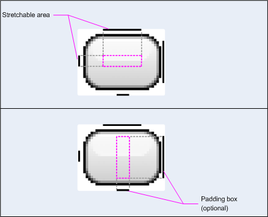

Contents [Hide]
|
 Android Resource Framework
Android Resource FrameworkReference:
Resource TypeAndroid resources are extracted and externalized from code and packages of applications. All the resources are declared in a group of resource files in xml format which begin with <?xml version="1.0" encoding="utf-8"?>, and enclosed in the root element <resources> of the files:
<?xml version="1.0" encoding="utf-8"?>
<resources>
... ...
</resources>
The resource declaration files are located under the subdirectories of the res subdir under the application installation packages.
/home/justin/projects/android-projects/Hello Android:
总计 40
drwxr-xr-x 6 justin justin 4096 02-16 11:29 .
drwxr-xr-x 3 justin justin 4096 02-16 11:29 ..
-rw-r—r— 1 justin justin 1100 02-16 11:29 Android Manifest.xml
drwxr-xr-x 2 justin justin 4096 02-16 11:29 bin
-rw-r—r— 1 justin justin 2214 02-16 11:29 build.xml
-rw-r—r— 1 justin justin 363 02-16 11:29 default.properties
drwxr-xr-x 2 justin justin 4096 02-16 11:29 libs
-rw-r—r— 1 justin justin 478 02-16 11:29 local.properties
drwxr-xr-x 2 justin justin 4096 02-16 11:29 res
drwxr-xr-x 3 justin justin 4096 02-16 11:29 src
Android theme data fall into the following types:
Simple ValuesSimple values include:
ColorUsage
| Item | Example |
|---|---|
| File | res/values/colors.xml |
| Element | <color> containted in <resources> |
| Syntax | <color name="color_name">#color_value</color> |
| Value Format | #RGB #ARGB #RRGGBB #AARRGGBB |
| Compiled Type | Resource Pointer to a Java int |
| Reference Name | Java: R.color.color_name XML: @[package:]color/color_name |
Example:
XML Declaration:
<resources> <color name="opaque_red">#f00</color> <color name="translucent_red">#80ff0000</color> </resources>
Code Reference:
// Retrieve a color value. int color = getResources.getColor(R.color.opaque_red);
XML Reference:
<TextView android:layout_width="fill_parent"
android:layout_height="wrap_content"
android:textAlign="center"
android:textColor="@color/translucent_red"
android:text="Some Text"/>
String and Styled TextUsage:
| Item | Value |
|---|---|
| File | res/values/strings.xml |
| Element | <string> |
| Syntax | <string name="string_name">string_value</string> |
| Value Format | See the note |
| Compile Type | Resource pointer to a Java Char Sequence. |
| Reference Name | Java: R.string.string_name XML: @[package]string/string_name |
1. If you use an apostrophe or a quote in your string, you must either escape it or enclose the whole string in the other kind of enclosing quotes:
<string name="good_example">"This'll work"</string> <string name="good_example_2">This\'ll also work</string> <string name="bad_example">This won't work!</string> <string name="bad_example_2">XML encodings won't work either!</string>
2. The HTML tags <u> <i> and <b> can be include in the text, and make the string styled.
Example:
XML Declaration:
<resources> <string name="simple_welcome_message">Welcome!</string> <string name="styled_welcome_message">We are <b><i>so</i></b> glad to see you.</string> </resources>
Code Reference:
// Assign a styled string resource to a TextView // on the current screen. // Get the Char CharSequence str = getString(R.string.styled_welcome_message); //Get raw Text of the CharSequence //In the case of simple text, rawText==str String rawText = str.toString(); TextView tv = (TextView)findViewByID(R.id.text); tv.setText(str);
XML Reference:
<TextView android:layout_width="fill_parent"
android:layout_height="wrap_content"
android:textAlign="center"
android:text="@string/simple_welcome_message"/>
The recommended way to use styled text:
Suppose we have the original styled text:
%1$d results for <b>"%2$s"</b>
1. First, store the tags in the styled text in the sgml/xml escaped format, either in the help of tools or do it manually. The Html.htmlEncode(String) will do the job:
String escapedTitle = TextUtil.htmlEncode(title);
and then we put the escaped string in the resource file:
<resources>
<string name="search_results_resultsTextFormat">%1$d results for <b>&quot;%2$s&quot;</b></string>
</resources>
2. Then, when read from the the xml file, the string has been unescaped to tagged text:
%1$d results for <b>"%2$s"</b>
3. Use String.format() to format the HTML text at this time, substitute the parameters:
String resultsText = String.format(resultsTextFormat, 13, "insane");
here we get:
13 results for <b>"insane"</b>
4. As last step, get a complicated Char Sequence (Spanned):
CharSequence styledResults = Html.fromHtml(resultsText);
to get the plain text in the Spanned text, try:
String plainText = styledResults.toString();
and we get the plainText:
13 results for "insane"
DimensionUsage:
| Item | Value |
|---|---|
| File | res/values/dimens.xml |
| Element | <dimen> |
| Syntax | <dimen name="dimen_name">dimen_value</dimen> |
| Compiled Type | Resource pointer to a dimension.Resource pointer to a dimension. |
| Value Format | See the note |
| Reference Name | Java: R.dimen.dimen_name XML: @[package:]dimen/dimen_name |
Note: A dimension is a number following by a unit of measurement. The unit includes:
The compiler accepts both "dip" and "dp", though "dp" is more consistent with "dip".
Example:
XML Declaration:
<resources>
<dimen name="one_pixel">1px</dimen>
<dimen name="double_density">2dp</dimen>
<dimen name="sixteen_sp">16sp</dimen>
</resources>
Code Reference:
float dimen = Resources.getDimension(R.dimen.one_pixel);
XML Reference:
<TextView android:layout_width="fill_parent"
android:layout_height="wrap_content"
android:textSize="@dimen/sixteen_sp"/>
DrawablesDrawables includes:
Bitmap DrawableAndroid support the png (preferred), jpg (acceptable), gif (discouraged) image files.
Usage:
| Item | Value |
|---|---|
| File | res/drawable/bitmap_name.png (.gif, .jpg are acceptable) |
| Element | N/A |
| Syntax | N/A |
| Value Format | N/A |
| Compiled Type | Resource pointer to a Bitmap Drawable |
| Reference Name | Java: R.drawable.bitmap_name XML: @[package:drawable/bitmap_name |
Example:
Code Reference:
// Load an array with BitmapDrawable resources.
private Integer[] mThumbIds = {
R.drawable.sample_thumb_0,
R.drawable.sample_thumb_1,
R.drawable.sample_thumb_2,
R.drawable.sample_thumb_3,
R.drawable.sample_thumb_4
};
// Load and return a view with an image.
public View getView(int position, ViewGroup parent)
{
ImageView i = new ImageView(mContext);
i.setImageResource(mThumbIds[position]);
i.setAdjustViewBounds(true);
i.setLayoutParams(new Gallery.LayoutParams(LayoutParams.WRAP_CONTENT, LayoutParams.WRAP_CONTENT));
i.setBackground(android.R.drawable.picture_frame);
return i;
}
XML Reference:
<ImageView id="@+id/icon" android:layout_width="wrap_content" android:layout_height="wrap_content" android:tint="#FF000000" android:src="@drawable/chat_icon"/>
Color DrawableA color drawable is a rectangle of color, with optionally rounded corners.
Usage:
| Item | Value |
|---|---|
| File | res/values/colors.xml |
| Element | <drawable> |
| Syntax | <drawable name="color_name">#color_value</drawable> |
| Value Format | Same as color simple value |
| Compile Type | Resource pointer to a Paint Drawable. |
| Reference Name | Java: R.drawable.color_name XML: @[package:]drawable/color_name |
Example:
XML Declaration:
<resources>
<drawable name="solid_red">#f00</drawable>
<drawable name="solid_blue">#0000ff</drawable>
<drawable name="solid_green">#f0f0</drawable>
</resources>
Code Reference:
// Assign a PaintDrawable as the background to // a TextView on the current screen. Drawable redDrawable = Resources.getDrawable(R.drawable.solid_red); TextView tv = (TextView)findViewByID(R.id.text); tv.setBackground(redDrawable);
XML Reference:
<TextView android:layout_width="fill_parent"
android:layout_height="wrap_content"
android:textAlign="center"
android:background="@drawable/solid_red"/>
Nine Patch Strechable DrawableIntroduction:
Nine patch stretchable image is a standard png image that include 1 pixel wide border.
The border is used to define:
1. the stretchable and static areas of the image. (left and top border)
2. the padding box. (right and bottom border)
|  |
| The stretchable and static area |
When text is to be drawn on the image, it will first stretch the the stretchable part until the text fits inside the stretched padding box.
 |
| Different Text in Nine Patch |
The utility tool - draw9path under ~/android/sdk/tools help to draw the border on a standard png image in a visualized way.
Usage:
| Item | Value |
|---|---|
| File | res/drawable/image_name.9.png (must end with .9.png) |
| Element | N/A |
| Sytax | N/A |
| Value Format | N/A |
| Compiled Type | Resource pointer to a Nine Patch Drawable. |
| Reference Name | Java: R.drawable.image_name XML: @[package:]drawable/image_name |
Example:
XML Reference:
<Button id="@+id/tiny"
android:layout_width="wrap_content"
android:layout_height="wrap_content"
android:layout_alignParentTop="true"
android:layout_centerInParent="true"
android:text="Tiny"
android:textSize="8sp"
android:background="@drawable/my_button_background"/>
<Button id="@+id/big"
android:layout_width="wrap_content"
android:layout_height="wrap_content"
android:layout_alignParentBottom="true"
android:layout_centerInParent="true"
android:text="Biiiiiiig text!"
android:textSize="30sp"
android:background="@drawable/my_button_background"/>
AnimationTweened AnimationAndroid perform simple animation on a single or a series of graphics, include rotations, fading, moving and streching.
Usage:
| Item | Value |
|---|---|
| File | res/anim/anim_name.xml one resource per file, one root tag with no <?xml> declaration |
| Element | See the note |
| Syntax | See the note |
| Value Format | See the note |
| Compiled Type | Resource pointer to an Animation |
| Reference Name | Java: R.anim.anim_name XML: @[package:]anim/anim_name |
1. The file must have a single root element: this will be either a single <alpha>, <scale>, <translate>, <rotate>, interpolator element, or <set> element that holds groups of these elements (which may include another <set>).
<set android:shareInterpolator=boolean> // Only required if multiple tags are used.
<alpha android:fromAlpha=float
android:toAlpha=float > |
<scale android:fromXScale=float
android:toXScale=float
android:fromYScale=float
android:toYScale=float
android:pivotX=string
android:pivotY=string> |
<translate android:fromX=string
android:toX=string
android:fromY=string
android:toY=string> |
<rotate android:fromDegrees=float
android:toDegrees=float
android:pivotX=string
android:pivotY=string /> |
<interpolator tag>
<set>
</set>
2. By default, all elements are applied simultaneously. To have them occur sequentially, you must specify the startOffset attribute, as shown in the example code.
Element and Attribute:
Note that alpha, scale, rotate, translate all support the following attributes from the base animation class, Base Animation:
Example:
XML Declaration:
<set android:shareInterpolator="false">
<scale
android:interpolator="@android:anim/ease_in_out_interpolator"
android:fromXScale="1.0"
android:toXScale="1.4"
android:fromYScale="1.0"
android:toYScale="0.6"
android:pivotX="50%"
android:pivotY="50%"
android:fillAfter="false"
android:duration="700" />
<set android:interpolator="@android:anim/ease_in_interpolator">
<scale
android:fromXScale="1.4"
android:toXScale="0.0"
android:fromYScale="0.6"
android:toYScale="0.0"
android:pivotX="50%"
android:pivotY="50%"
android:startOffset="700"
android:duration="400"
android:fillBefore="false" />
<rotate
android:fromDegrees="0"
android:toDegrees="-45"
android:toYScale="0.0"
android:pivotX="50%"
android:pivotY="50%"
android:startOffset="700"
android:duration="400" />
</set>
</set>
Code Reference:
mFlipper.setInAnimation(AnimationUtils.loadAnimation(this, R.anim.hyperspace_in)); mFlipper.setOutAnimation(AnimationUtils.loadAnimation(this, R.anim.hyperspace_out));
LayoutLayout specify screen layouts using XML elements inside an XML file. Each file contains a whole screen or part of a screen.
Usage:
| Item | Value |
|---|---|
| FILE | res/layout/layout_name.xml |
| Element | View Group Class |
| Syntax | See the Element and Attribute |
| Value Format | See the Element and Attribute |
| Compiled Type | Resource pointer to a View (or subclass) resource. |
| Reference Name | Java: R.layout.layout_name XML: @[package:]layout/layout_name |
Layout element has the following recursive structure:
<ViewGroupClass xmlns:android="http://schemas.android.com/apk/res/android"
id="@+id/string_name" (attributes)>
<widget or other nested ViewGroupClass>+
<requestFocus/>(0 or 1 per layout file, assigned to any element)
</ViewGroupClass>
Example:
XML Declaration:
The attributes set of an element can be found at R.styleable. The attributes come from the exposed attributes in the underline
class or superclasses:
1. Widget Attributes:
For example, if R.styleable lists the following values:
The following element can be created:
<TextView android:lines="10" android:maxlines="20"/>
2. Layout Attributes:
For example if R.styleable lists the following values:
In the children nodes of the <Linear Layout>, the attribute can be specified.
<?xml version="1.0" encoding="utf-8"?>
<!-- res/main_screen.xml -->
<LinearLayout xmlns:android="http://schemas.android.com/apk/res/android"
android:orientation="vertical" // The object's own orientation property
android:padding="4" // Inherited View property
android:gravity="center" // The object's own property
android:layout_width="fill_parent" // Parent object's LinearLayout.LayoutParams.width
android:layout_height="fill_parent"> // Parent object's LinearLayout.LayoutParams.height
<TextView android:layout_width="fill_parent" // TextView.LayoutParams.width
android:layout_height="wrap_content" // TextView.LayoutParams.height
android:layout_weight="0" // TextView.LayoutParams.weight
android:paddingBottom="4" // TextView.paddingBottom
android:text="@string/redirect_getter"/> // TextView.text
<EditText id="@+id/text"
android:layout_width="fill_parent" // EditText.LayoutParams.width
android:layout_height="wrap_content" // EditText.LayoutParams.height
android:layout_weight="0" // EditText.LinearLayoutParams.weight
android:paddingBottom="4"> // EditText.paddingBottom
<requestFocus />
</EditText>
<Button id="@+id/apply"
android:layout_width="wrap_content" // Button.LayoutParams.width
android:layout_height="wrap_content" // Button.LayoutParams.height
android:text="@string/apply" /> // TextView.text
</LinearLayout>
Code Reference:
setContentView(R.layout.main_screen); //Activity.setContentView
Custom Layout Resource - StyleableCustom elements can be used in the same way as any Android layout element, so the reusable components can be created for future reference.
USAGE:
| Item | Values |
|---|---|
| File | Java Class: extends the View or subclass Attributes Definition: res/values/attrs.xml |
| Element | Without an <?xml> declaration, <resources> root element containing one or more <declare-styleable> |
| Syntax | See the note |
| Value Format | See the note |
| Compiled Type | Resource pointer to a View (or subclass) resource |
| Reference Name | Java: R.styleable.java_class_name XML: java_full_class_name |
The following items need to be supplied:
1. Jave implementation file: The class must extend android.View or a subclass of View. Take com.example.android.apis.view.Label View. in Api Demo for example:
0:[-] LabelView.java
1: -> LabelView{}
2: {-} Variables
3: +> mTextPaint
3: +> mText
3: +> mAscent
2: {-} Methods
3: +> LabelView()
3: +> LabelView()
3: +> initLabelView()
3: +> setText()
3: +> setTextSize()
3: +> setTextColor()
3: +> onMeasure()
3: +> measureWidth()
3: +> measureHeight()
3: +> onDraw()
1: {-} Imports
2: => android.content.Context<>
2: => android.content.res.TypedArray<>
2: => android.graphics.Canvas<>
2: => android.graphics.Paint<>
2: => android.util.AttributeSet<>
2: => android.view.View<>
2: => com.example.android.apis.R<>
1: => com.example.android.apis.view
2. res/values/attrs.xml:
Define the XML element, and the attributes that it supports
<resources>
<declare-styleable name="LabelView">
<attr name="text" format="string" />
<attr name="textColor" format="color" />
<attr name="textSize" format="dimension" />
</declare-styleable>
</resources>
After build the android project, the compiler generate the styleable members in the com.example.android.apis.R.Styleable class:
LabelView LabelView_text LabelView_textColor LabelView_textSize
3. res/layout/java_class_name.xml: An optional XML file to describe the layout of your object.
<LinearLayout xmlns:android="http://schemas.android.com/apk/res/android"
xmlns:app="http://schemas.android.com/apk/res/com.example.android.apis"
android:orientation="vertical"
android:layout_width="fill_parent"
android:layout_height="wrap_content">
<com.example.android.apis.view.LabelView
android:background="@drawable/red"
android:layout_width="fill_parent"
android:layout_height="wrap_content"
app:text="Red"/>
<com.example.android.apis.view.LabelView
android:background="@drawable/blue"
android:layout_width="fill_parent"
android:layout_height="wrap_content"
app:text="Blue" app:textSize="20dp"/>
}}}
<com.example.android.apis.view.LabelView
android:background="@drawable/green"
android:layout_width="fill_parent"
android:layout_height="wrap_content"
app:text="Green" app:textColor="#ffffffff" />
</LinearLayout>
Style and ThemeA style is one or more attributes applied to a single element (for example, 10 point red Arial font, applied to a Text View). A style is applied as an attribute to an element in a layout XML file.
A theme is one or more attributes applied to a whole screen — for example, you might apply the stock Android Theme.dialog theme to an activity designed to be a floating dialog box. A theme is assigned as an attribute to an Activity in the manifest file.
Usage:
| Item | Value |
|---|---|
| File | res/valus/styles.xml |
| Element | <style> |
| Syntax | See Elements and Attributes |
| Value Format | See Elements and Attributes |
| Compiled Type | Resource pointer to a Java Char Sequence |
| Resource Name | Java: R.style.style_id for the whole style R.style.style_id.item_idfor the individual setting XML: @[package:]style/style_id for the whole style @[package:]style/style_id/item_id for the individual setting. |
To refer to a value in the currently applied theme, use "?" instead of "@" as described below (XML)
Style element has the following syntax:
<style name="style_id" [parent="parent_id"] > <item name=string>Hex value | string value | reference</item>+ </style>
Example:
1. Style
XML Declaration:
<?xml version="1.0" encoding="utf-8"?>
<resources>
<style name="SpecialText">
<item name="android:textSize">18sp</item>
<item name="android:textColor">#008</item>
</style>
</resources>
XML Reference:
<!-- MainPageLayout.xml -->
<?xml version="1.0" encoding="utf-8"?>
<LinearLayout xmlns:android="http://schemas.android.com/apk/res/android"
android:layout_height="fill_parent"
android:layout_width="fill_parent"
android:orientation="vertical"
android:scrollbars="vertical"
id="main_frame">
<EditText id="@+id/text1"
style="@style/SpecialText"
android:layout_width="fill_parent"
android:layout_height="wrap_content"
android:text="Hello, World!" />
</LinearLayout>
2. Theme
XMLDeclaration
<style name="ThemeNew"> <item name="windowFrame">@drawable/screen_frame</item> <item name="windowBackground">@drawable/screen_background_white</item> <item name="panelForegroundColor">#FF000000</item> <item name="panelBackgroundColor">#FFFFFFFF</item> <item name="panelTextColor">?panelForegroundColor</item> <item name="panelTextSize">14</item> <item name="menuItemTextColor">?panelTextColor</item> <item name="menuItemTextSize">?panelTextSize</item> </style>
Code Reference:
setTheme(R.style.ThemeNew); //Activity.setTheme()
XML Reference:
<!-- AndroidManifest.xml -->
<manifest xmlns:android="http://schemas.android.com/apk/res/android"
package="com.example.codelab.rssexample">
<activity class="AddRssItem" android:label="@string/add_item_label" android:theme="@android:style/Theme.Dialog"/>
</manifest>
Android Theme Utils
AAPT - Android Assets Package Tool$ aapt package -m -J <FOLDER> -M Android Manifest.xml -S res -I <PATH>/android.jar
The <FOLDER> param represents the src folder where the .java classes are. (normally just “src”)
The <PATH> is the location of the android.jar
Please also note that this command must be run on the location of the Android Project.
Theme StructureAndroid cascade theme structure.
Theme Scope - Resource Type
Create the customization theme
Proposed Theme Framework
<!-- Default theme for dialog windows and activities, which is used by the
{@link android.app.Dialog} class. This changes the window to be
floating (not fill the entire screen), and puts a frame around its
contents. You can set this theme on an activity if you would like to
make an activity that looks like a Dialog. -->
<style name="Theme.InputMethod" parent="Theme.Light.NoTitleBar">
<item name="android:windowBackground">@android:color/transparent</item>
<item name="android:windowFrame">@null</item>
<item name="android:windowIsFloating">true</item>
<item name="android:backgroundDimEnabled">false</item>
<item name="android:windowIsTranslucent">true</item>
<item name="android:windowAnimationStyle">@android:style/Animation.InputMethod</item>
</style>
/home/justin/android/src: 总计 68 drwxr-xr-x 16 justin justin 4096 01-15 23:46 . drwxr-xr-x 7 justin justin 4096 02-17 15:41 .. drwxr-xr-x 9 justin justin 4096 01-15 23:13 bionic drwxr-xr-x 5 justin justin 4096 01-15 23:13 bootable drwxr-xr-x 7 justin justin 4096 02-13 18:04 build drwxr-xr-x 18 justin justin 4096 02-13 17:47 dalvik drwxr-xr-x 15 justin justin 4096 01-15 23:14 development drwxr-xr-x 61 justin justin 4096 01-15 23:16 external drwxr-xr-x 5 justin justin 4096 01-15 23:16 frameworks drwxr-xr-x 4 justin justin 4096 01-15 23:16 hardware drwxr-xr-x 23 justin justin 4096 01-15 23:17 kernel -r--r--r-- 1 justin justin 87 01-15 23:14 Makefile drwxr-xr-x 4 justin justin 4096 01-16 00:15 out drwxr-xr-x 4 justin justin 4096 01-15 23:17 packages drwxr-xr-x 9 justin justin 4096 01-15 23:18 prebuilt drwxr-xr-x 6 justin justin 4096 01-15 17:19 .repo drwxr-xr-x 6 justin justin 4096 01-15 23:18 system
# /home/justin/android/src/frameworks/base/core/res: # # Copyright (C) 2008 The Android Open Source Project # # Licensed under the Apache License, Version 2.0 (the "License"); # you may not use this file except in compliance with the License. # You may obtain a copy of the License at # # http://www.apache.org/licenses/LICENSE-2.0 # # Unless required by applicable law or agreed to in writing, software # distributed under the License is distributed on an "AS IS" BASIS, # WITHOUT WARRANTIES OR CONDITIONS OF ANY KIND, either express or implied. # See the License for the specific language governing permissions and # limitations under the License. # LOCAL_PATH := $(call my-dir) include $(CLEAR_VARS) LOCAL_NO_STANDARD_LIBRARIES := true LOCAL_PACKAGE_NAME := framework-res LOCAL_CERTIFICATE := platform # Tell aapt to create "extending (non-application)" resource IDs, # since these resources will be used by many apps. LOCAL_AAPT_FLAGS := -x LOCAL_MODULE_TAGS := user development # Install this alongside the libraries. LOCAL_MODULE_PATH := $(TARGET_OUT_JAVA_LIBRARIES) # Create package-export.apk, which other packages can use to get # PRODUCT-agnostic resource data like IDs and type definitions. LOCAL_EXPORT_PACKAGE_RESOURCES := true include $(BUILD_PACKAGE)
/home/justin/android/src/out/target/product/generic/system/framework: 总计 6668 drwxr-xr-x 2 justin justin 4096 01-16 03:21 . drwxr-xr-x 12 justin justin 4096 01-16 03:21 .. -rw-r--r-- 1 justin justin 6520 01-16 12:02 am.jar -rw-r--r-- 1 justin justin 438145 01-16 12:02 android.awt.jar -rw-r--r-- 1 justin justin 64765 01-16 12:02 android.policy.jar -rw-r--r-- 1 justin justin 69913 01-16 12:02 android.test.runner.jar -rw-r--r-- 1 justin justin 6460 01-16 12:02 com.android.im.plugin.jar -rw-r--r-- 1 justin justin 1559416 01-15 23:57 core.jar -rw-r--r-- 1 justin justin 327666 01-15 23:57 ext.jar -rw-r--r-- 1 justin justin 1959226 01-16 11:49 framework.jar -rw-r--r-- 1 justin justin 1907175 01-16 12:04 framework-res.apk -rw-r--r-- 1 justin justin 11324 01-16 12:03 framework-tests.jar -rw-r--r-- 1 justin justin 3403 01-16 12:03 ime.jar -rw-r--r-- 1 justin justin 2512 01-16 12:03 input.jar -rw-r--r-- 1 justin justin 19915 01-16 12:03 monkey.jar -rw-r--r-- 1 justin justin 9869 01-16 12:03 pm.jar -rw-r--r-- 1 justin justin 373857 01-16 12:04 services.jar -rw-r--r-- 1 justin justin 3713 01-16 12:04 svc.jar
M Filemode Length Date Time File
- ---------- -------- ----------- -------- ------------------------------------------------------------
-rw-rw-rw- 76217 16-Apr-2008 07:40:50 meta-inf/manifest.mf
-rw-rw-rw- 76259 16-Apr-2008 07:40:50 meta-inf/cert.sf
-rw-rw-rw- 1714 16-Apr-2008 07:40:50 meta-inf/cert.rsa
-rw-rw-rw- 31768 16-Jan-2009 12:04:18 AndroidManifest.xml
-rw-rw-rw- 3098 15-Jan-2009 23:16:34 assets/images/android_320x480.png
-rw-rw-rw- 1001 15-Jan-2009 23:16:34 assets/images/boot_robot.png
-rw-rw-rw- 2083 15-Jan-2009 23:16:34 assets/images/boot_robot_glow.png
-rw-rw-rw- 566 15-Jan-2009 23:16:34 assets/images/combobox-disabled.png
-rw-rw-rw- 655 15-Jan-2009 23:16:34 assets/images/combobox-noHighlight.png
-rw-rw-rw- 748 15-Jan-2009 23:16:34 assets/images/cylon_dot.png
-rw-rw-rw- 1283 15-Jan-2009 23:16:34 assets/images/cylon_left.png
-rw-rw-rw- 1259 15-Jan-2009 23:16:34 assets/images/cylon_right.png
-rw-rw-rw- 79471 15-Jan-2009 23:16:34 assets/sounds/bootanim0.raw
-rw-rw-rw- 79392 15-Jan-2009 23:16:34 assets/sounds/bootanim1.raw
-rw-rw-rw- 1140 15-Jan-2009 23:16:34 assets/webkit/android-weberror.png
-rw-rw-rw- 456 15-Jan-2009 23:16:34 assets/webkit/missingImage.png
-rw-rw-rw- 1552 15-Jan-2009 23:16:34 assets/webkit/nullplugin.png
-rw-rw-rw- 64890 15-Jan-2009 23:16:34 assets/webkit/play.png
-rw-rw-rw- 182 15-Jan-2009 23:16:34 assets/webkit/textAreaResizeCorner.png
-rw-rw-rw- 1413 15-Jan-2009 23:16:34 assets/webkit/youtube.html
-rw-rw-rw- 1544 15-Jan-2009 23:16:34 assets/webkit/youtube.png
-rw-rw-rw- 340 16-Jan-2009 12:04:18 res/anim/accelerate_decelerate_interpolator.xml
-rw-rw-rw- 368 16-Jan-2009 12:04:18 res/anim/accelerate_interpolator.xml
-rw-rw-rw- 568 16-Jan-2009 12:04:18 res/anim/app_starting_exit.xml
-rw-rw-rw- 368 16-Jan-2009 12:04:18 res/anim/decelerate_interpolator.xml
-rw-rw-rw- 952 16-Jan-2009 12:04:18 res/anim/dialog_enter.xml
-rw-rw-rw- 952 16-Jan-2009 12:04:18 res/anim/dialog_exit.xml
-rw-rw-rw- 492 16-Jan-2009 12:04:18 res/anim/fade_in.xml
-rw-rw-rw- 492 16-Jan-2009 12:04:18 res/anim/fade_out.xml
-rw-rw-rw- 952 16-Jan-2009 12:04:18 res/anim/grow_fade_in.xml
-rw-rw-rw- 952 16-Jan-2009 12:04:18 res/anim/grow_fade_in_center.xml
-rw-rw-rw- 952 16-Jan-2009 12:04:18 res/anim/grow_fade_in_from_bottom.xml
-rw-rw-rw- 772 16-Jan-2009 12:04:18 res/anim/input_method_enter.xml
-rw-rw-rw- 772 16-Jan-2009 12:04:18 res/anim/input_method_exit.xml
-rw-rw-rw- 312 16-Jan-2009 12:04:18 res/anim/linear_interpolator.xml
-rw-rw-rw- 772 16-Jan-2009 12:04:18 res/anim/options_panel_enter.xml
-rw-rw-rw- 772 16-Jan-2009 12:04:18 res/anim/options_panel_exit.xml
-rw-rw-rw- 716 16-Jan-2009 12:04:18 res/anim/push_down_in.xml
-rw-rw-rw- 716 16-Jan-2009 12:04:18 res/anim/push_down_out.xml
-rw-rw-rw- 716 16-Jan-2009 12:04:18 res/anim/push_up_in.xml
-rw-rw-rw- 716 16-Jan-2009 12:04:18 res/anim/push_up_out.xml
-rw-rw-rw- 772 16-Jan-2009 12:04:18 res/anim/search_bar_enter.xml
-rw-rw-rw- 772 16-Jan-2009 12:04:18 res/anim/search_bar_exit.xml
-rw-rw-rw- 952 16-Jan-2009 12:04:18 res/anim/shrink_fade_out.xml
-rw-rw-rw- 952 16-Jan-2009 12:04:18 res/anim/shrink_fade_out_center.xml
-rw-rw-rw- 952 16-Jan-2009 12:04:18 res/anim/shrink_fade_out_from_bottom.xml
-rw-rw-rw- 716 16-Jan-2009 12:04:18 res/anim/slide_in_bottom.xml
-rw-rw-rw- 772 16-Jan-2009 12:04:18 res/anim/slide_in_child_bottom.xml
-rw-rw-rw- 716 16-Jan-2009 12:04:18 res/anim/slide_in_left.xml
-rw-rw-rw- 716 16-Jan-2009 12:04:18 res/anim/slide_in_right.xml
-rw-rw-rw- 716 16-Jan-2009 12:04:18 res/anim/slide_in_top.xml
-rw-rw-rw- 716 16-Jan-2009 12:04:18 res/anim/slide_out_bottom.xml
-rw-rw-rw- 716 16-Jan-2009 12:04:18 res/anim/slide_out_left.xml
-rw-rw-rw- 716 16-Jan-2009 12:04:18 res/anim/slide_out_right.xml
-rw-rw-rw- 716 16-Jan-2009 12:04:18 res/anim/slide_out_top.xml
-rw-rw-rw- 772 16-Jan-2009 12:04:18 res/anim/submenu_enter.xml
-rw-rw-rw- 716 16-Jan-2009 12:04:18 res/anim/submenu_exit.xml
-rw-rw-rw- 632 16-Jan-2009 12:04:18 res/anim/task_close_enter.xml
-rw-rw-rw- 580 16-Jan-2009 12:04:18 res/anim/task_close_exit.xml
-rw-rw-rw- 580 16-Jan-2009 12:04:18 res/anim/task_open_enter.xml
-rw-rw-rw- 632 16-Jan-2009 12:04:18 res/anim/task_open_exit.xml
-rw-rw-rw- 492 16-Jan-2009 12:04:18 res/anim/toast_enter.xml
-rw-rw-rw- 492 16-Jan-2009 12:04:18 res/anim/toast_exit.xml
-rw-rw-rw- 1028 16-Jan-2009 12:04:18 res/color/primary_text_dark.xml
-rw-rw-rw- 556 16-Jan-2009 12:04:18 res/color/primary_text_dark_disable_only.xml
-rw-rw-rw- 832 16-Jan-2009 12:04:18 res/color/primary_text_dark_focused.xml
-rw-rw-rw- 556 16-Jan-2009 12:04:18 res/color/primary_text_dark_nodisable.xml
-rw-rw-rw- 1028 16-Jan-2009 12:04:18 res/color/primary_text_light.xml
-rw-rw-rw- 556 16-Jan-2009 12:04:18 res/color/primary_text_light_disable_only.xml
-rw-rw-rw- 556 16-Jan-2009 12:04:18 res/color/primary_text_light_nodisable.xml
-rw-rw-rw- 1388 16-Jan-2009 12:04:18 res/color/secondary_text_dark.xml
-rw-rw-rw- 556 16-Jan-2009 12:04:18 res/color/secondary_text_dark_nodisable.xml
-rw-rw-rw- 1388 16-Jan-2009 12:04:18 res/color/secondary_text_light.xml
-rw-rw-rw- 556 16-Jan-2009 12:04:18 res/color/secondary_text_light_nodisable.xml
-rw-rw-rw- 556 16-Jan-2009 12:04:18 res/color/tab_indicator_text.xml
-rw-rw-rw- 1028 16-Jan-2009 12:04:18 res/color/tertiary_text_dark.xml
-rw-rw-rw- 1028 16-Jan-2009 12:04:18 res/color/tertiary_text_light.xml
-rw-rw-rw- 556 16-Jan-2009 12:04:18 res/color/theme_panel_text.xml
-rw-rw-rw- 556 16-Jan-2009 12:04:18 res/color/widget_autocompletetextview_dark.xml
-rw-rw-rw- 556 16-Jan-2009 12:04:18 res/color/widget_button.xml
-rw-rw-rw- 556 16-Jan-2009 12:04:18 res/color/widget_edittext_dark.xml
-rw-rw-rw- 556 16-Jan-2009 12:04:18 res/color/widget_edittext_dark_hint.xml
-rw-rw-rw- 556 16-Jan-2009 12:04:18 res/color/widget_paneltabwidget.xml
-rw-rw-rw- 556 16-Jan-2009 12:04:18 res/color/widget_textview_bigspinneritem_dark.xml
-rw-rw-rw- 556 16-Jan-2009 12:04:18 res/color/widget_textview_spinneritem_dark.xml
-rw-rw-rw- 1947 16-Jan-2009 12:04:18 res/drawable-land/bottombar_565.png
-rw-rw-rw- 857 16-Jan-2009 12:04:18 res/drawable-land/statusbar_background.png
-rw-rw-rw- 564 16-Jan-2009 12:04:18 res/drawable/app_icon_background.xml
-rw-rw-rw- 303 16-Jan-2009 12:04:18 res/drawable/arrow_down_float.png
-rw-rw-rw- 305 16-Jan-2009 12:04:18 res/drawable/arrow_up_float.png
-rw-rw-rw- 3073 16-Jan-2009 12:04:18 res/drawable/battery_charge_background.png
-rw-rw-rw- 676 16-Jan-2009 12:04:18 res/drawable/battery_charge_fill.xml
-rw-rw-rw- 622 16-Jan-2009 12:04:18 res/drawable/battery_charge_fill_empty.9.png
-rw-rw-rw- 628 16-Jan-2009 12:04:18 res/drawable/battery_charge_fill_full.9.png
-rw-rw-rw- 715 16-Jan-2009 12:04:18 res/drawable/battery_charge_fill_warning.9.png
-rw-rw-rw- 5206 16-Jan-2009 12:04:18 res/drawable/battery_low_battery.png
-rw-rw-rw- 178 16-Jan-2009 12:04:18 res/drawable/blank_tile.png
-rw-rw-rw- 573 16-Jan-2009 12:04:18 res/drawable/boot_robot.png
-rw-rw-rw- 1475 16-Jan-2009 12:04:18 res/drawable/bottom_bar.png
-rw-rw-rw- 832 16-Jan-2009 12:04:18 res/drawable/box.xml
-rw-rw-rw- 620 16-Jan-2009 12:04:18 res/drawable/btn_application_selector.xml
-rw-rw-rw- 2308 16-Jan-2009 12:04:18 res/drawable/btn_check.xml
-rw-rw-rw- 612 16-Jan-2009 12:04:18 res/drawable/btn_check_buttonless_off.png
-rw-rw-rw- 713 16-Jan-2009 12:04:18 res/drawable/btn_check_buttonless_on.png
-rw-rw-rw- 181 16-Jan-2009 12:04:18 res/drawable/btn_check_label_background.9.png
-rw-rw-rw- 1325 16-Jan-2009 12:04:18 res/drawable/btn_check_off.png
-rw-rw-rw- 1028 16-Jan-2009 12:04:18 res/drawable/btn_check_off_disable.png
-rw-rw-rw- 1202 16-Jan-2009 12:04:18 res/drawable/btn_check_off_disable_focused.png
-rw-rw-rw- 1568 16-Jan-2009 12:04:18 res/drawable/btn_check_off_longpress.png
-rw-rw-rw- 1431 16-Jan-2009 12:04:18 res/drawable/btn_check_off_pressed.png
-rw-rw-rw- 1443 16-Jan-2009 12:04:18 res/drawable/btn_check_off_selected.png
-rw-rw-rw- 1661 16-Jan-2009 12:04:18 res/drawable/btn_check_on.png
-rw-rw-rw- 1203 16-Jan-2009 12:04:18 res/drawable/btn_check_on_disable.png
-rw-rw-rw- 1376 16-Jan-2009 12:04:18 res/drawable/btn_check_on_disable_focused.png
-rw-rw-rw- 1603 16-Jan-2009 12:04:18 res/drawable/btn_check_on_longpress.png
-rw-rw-rw- 1494 16-Jan-2009 12:04:18 res/drawable/btn_check_on_pressed.png
-rw-rw-rw- 1510 16-Jan-2009 12:04:18 res/drawable/btn_check_on_selected.png
-rw-rw-rw- 580 16-Jan-2009 12:04:18 res/drawable/btn_close.xml
-rw-rw-rw- 1522 16-Jan-2009 12:04:18 res/drawable/btn_close_normal.png
-rw-rw-rw- 1537 16-Jan-2009 12:04:18 res/drawable/btn_close_pressed.png
-rw-rw-rw- 1118 16-Jan-2009 12:04:18 res/drawable/btn_code_lock_default.png
-rw-rw-rw- 1747 16-Jan-2009 12:04:18 res/drawable/btn_code_lock_default_trackball_pressed.png
-rw-rw-rw- 1729 16-Jan-2009 12:04:18 res/drawable/btn_code_lock_default_trackball_selected.png
-rw-rw-rw- 1785 16-Jan-2009 12:04:18 res/drawable/btn_code_lock_touched.png
-rw-rw-rw- 1320 16-Jan-2009 12:04:18 res/drawable/btn_default.xml
-rw-rw-rw- 2048 16-Jan-2009 12:04:18 res/drawable/btn_default_longpress.9.png
-rw-rw-rw- 1230 16-Jan-2009 12:04:18 res/drawable/btn_default_normal.9.png
-rw-rw-rw- 791 16-Jan-2009 12:04:18 res/drawable/btn_default_normal_disable.9.png
-rw-rw-rw- 1061 16-Jan-2009 12:04:18 res/drawable/btn_default_normal_disable_focused.9.png
-rw-rw-rw- 1860 16-Jan-2009 12:04:18 res/drawable/btn_default_pressed.9.png
-rw-rw-rw- 2004 16-Jan-2009 12:04:18 res/drawable/btn_default_selected.9.png
-rw-rw-rw- 1320 16-Jan-2009 12:04:18 res/drawable/btn_default_small.xml
-rw-rw-rw- 1762 16-Jan-2009 12:04:18 res/drawable/btn_default_small_longpress.9.png
-rw-rw-rw- 1159 16-Jan-2009 12:04:18 res/drawable/btn_default_small_normal.9.png
-rw-rw-rw- 750 16-Jan-2009 12:04:18 res/drawable/btn_default_small_normal_disable.9.png
-rw-rw-rw- 968 16-Jan-2009 12:04:18 res/drawable/btn_default_small_normal_disable_focused.9.png
-rw-rw-rw- 1544 16-Jan-2009 12:04:18 res/drawable/btn_default_small_pressed.9.png
-rw-rw-rw- 1787 16-Jan-2009 12:04:18 res/drawable/btn_default_small_selected.9.png
-rw-rw-rw- 1120 16-Jan-2009 12:04:18 res/drawable/btn_dialog.xml
-rw-rw-rw- 1326 16-Jan-2009 12:04:18 res/drawable/btn_dialog_disable.png
-rw-rw-rw- 1298 16-Jan-2009 12:04:18 res/drawable/btn_dialog_disable_focused.png
-rw-rw-rw- 1103 16-Jan-2009 12:04:18 res/drawable/btn_dialog_normal.png
-rw-rw-rw- 1721 16-Jan-2009 12:04:18 res/drawable/btn_dialog_pressed.png
-rw-rw-rw- 1751 16-Jan-2009 12:04:18 res/drawable/btn_dialog_selected.png
-rw-rw-rw- 872 16-Jan-2009 12:04:18 res/drawable/btn_dropdown.xml
-rw-rw-rw- 1198 16-Jan-2009 12:04:18 res/drawable/btn_dropdown_disabled.9.png
-rw-rw-rw- 1699 16-Jan-2009 12:04:18 res/drawable/btn_dropdown_down.9.png
-rw-rw-rw- 1661 16-Jan-2009 12:04:18 res/drawable/btn_dropdown_normal.9.png
-rw-rw-rw- 1993 16-Jan-2009 12:04:18 res/drawable/btn_dropdown_pressed.9.png
-rw-rw-rw- 1972 16-Jan-2009 12:04:18 res/drawable/btn_dropdown_selected.9.png
-rw-rw-rw- 1499 16-Jan-2009 12:04:18 res/drawable/btn_erase_default.9.png
-rw-rw-rw- 1475 16-Jan-2009 12:04:18 res/drawable/btn_erase_pressed.9.png
-rw-rw-rw- 1261 16-Jan-2009 12:04:18 res/drawable/btn_erase_selected.9.png
-rw-rw-rw- 228 16-Jan-2009 12:04:18 res/drawable/btn_flicker_minus.png
-rw-rw-rw- 433 16-Jan-2009 12:04:18 res/drawable/btn_flicker_plus.png
-rw-rw-rw- 1120 16-Jan-2009 12:04:18 res/drawable/btn_keyboard_key.xml
-rw-rw-rw- 497 16-Jan-2009 12:04:18 res/drawable/btn_keyboard_key_longpress.9.png
-rw-rw-rw- 581 16-Jan-2009 12:04:18 res/drawable/btn_keyboard_key_longpress_off.9.png
-rw-rw-rw- 1080 16-Jan-2009 12:04:18 res/drawable/btn_keyboard_key_longpress_on.9.png
-rw-rw-rw- 527 16-Jan-2009 12:04:18 res/drawable/btn_keyboard_key_normal.9.png
-rw-rw-rw- 593 16-Jan-2009 12:04:18 res/drawable/btn_keyboard_key_normal_off.9.png
-rw-rw-rw- 1082 16-Jan-2009 12:04:18 res/drawable/btn_keyboard_key_normal_on.9.png
-rw-rw-rw- 519 16-Jan-2009 12:04:18 res/drawable/btn_keyboard_key_pressed.9.png
-rw-rw-rw- 594 16-Jan-2009 12:04:18 res/drawable/btn_keyboard_key_pressed_off.9.png
-rw-rw-rw- 1103 16-Jan-2009 12:04:18 res/drawable/btn_keyboard_key_pressed_on.9.png
-rw-rw-rw- 1829 16-Jan-2009 12:04:18 res/drawable/btn_media_player.9.png
-rw-rw-rw- 987 16-Jan-2009 12:04:18 res/drawable/btn_media_player_disabled.9.png
-rw-rw-rw- 1030 16-Jan-2009 12:04:18 res/drawable/btn_media_player_disabled_selected.9.png
-rw-rw-rw- 1554 16-Jan-2009 12:04:18 res/drawable/btn_media_player_pressed.9.png
-rw-rw-rw- 1841 16-Jan-2009 12:04:18 res/drawable/btn_media_player_selected.9.png
-rw-rw-rw- 996 16-Jan-2009 12:04:18 res/drawable/btn_minus.xml
-rw-rw-rw- 3378 16-Jan-2009 12:04:18 res/drawable/btn_minus_default.png
-rw-rw-rw- 3550 16-Jan-2009 12:04:18 res/drawable/btn_minus_disable.png
-rw-rw-rw- 3812 16-Jan-2009 12:04:18 res/drawable/btn_minus_disable_focused.png
-rw-rw-rw- 3466 16-Jan-2009 12:04:18 res/drawable/btn_minus_pressed.png
-rw-rw-rw- 3430 16-Jan-2009 12:04:18 res/drawable/btn_minus_selected.png
-rw-rw-rw- 996 16-Jan-2009 12:04:18 res/drawable/btn_plus.xml
-rw-rw-rw- 3431 16-Jan-2009 12:04:18 res/drawable/btn_plus_default.png
-rw-rw-rw- 3748 16-Jan-2009 12:04:18 res/drawable/btn_plus_disable.png
-rw-rw-rw- 3981 16-Jan-2009 12:04:18 res/drawable/btn_plus_disable_focused.png
-rw-rw-rw- 3620 16-Jan-2009 12:04:18 res/drawable/btn_plus_pressed.png
-rw-rw-rw- 3630 16-Jan-2009 12:04:18 res/drawable/btn_plus_selected.png
-rw-rw-rw- 1428 16-Jan-2009 12:04:18 res/drawable/btn_radio.xml
-rw-rw-rw- 181 16-Jan-2009 12:04:18 res/drawable/btn_radio_label_background.9.png
-rw-rw-rw- 1540 16-Jan-2009 12:04:18 res/drawable/btn_radio_off.png
-rw-rw-rw- 1028 16-Jan-2009 12:04:18 res/drawable/btn_radio_off_disable.png
-rw-rw-rw- 1459 16-Jan-2009 12:04:18 res/drawable/btn_radio_off_disable_focused.png
-rw-rw-rw- 1952 16-Jan-2009 12:04:18 res/drawable/btn_radio_off_longpress.png
-rw-rw-rw- 1892 16-Jan-2009 12:04:18 res/drawable/btn_radio_off_pressed.png
-rw-rw-rw- 1868 16-Jan-2009 12:04:18 res/drawable/btn_radio_off_selected.png
-rw-rw-rw- 1788 16-Jan-2009 12:04:18 res/drawable/btn_radio_on.png
-rw-rw-rw- 1080 16-Jan-2009 12:04:18 res/drawable/btn_radio_on_disable.png
-rw-rw-rw- 1508 16-Jan-2009 12:04:18 res/drawable/btn_radio_on_disable_focused.png
-rw-rw-rw- 2046 16-Jan-2009 12:04:18 res/drawable/btn_radio_on_longpress.png
-rw-rw-rw- 1987 16-Jan-2009 12:04:18 res/drawable/btn_radio_on_pressed.png
-rw-rw-rw- 1954 16-Jan-2009 12:04:18 res/drawable/btn_radio_on_selected.png
-rw-rw-rw- 2059 16-Jan-2009 12:04:18 res/drawable/btn_rating_star_off_normal.png
-rw-rw-rw- 3834 16-Jan-2009 12:04:18 res/drawable/btn_rating_star_off_pressed.png
-rw-rw-rw- 3800 16-Jan-2009 12:04:18 res/drawable/btn_rating_star_off_selected.png
-rw-rw-rw- 3688 16-Jan-2009 12:04:18 res/drawable/btn_rating_star_on_normal.png
-rw-rw-rw- 3825 16-Jan-2009 12:04:18 res/drawable/btn_rating_star_on_pressed.png
-rw-rw-rw- 3855 16-Jan-2009 12:04:18 res/drawable/btn_rating_star_on_selected.png
-rw-rw-rw- 2308 16-Jan-2009 12:04:18 res/drawable/btn_star.xml
-rw-rw-rw- 665 16-Jan-2009 12:04:18 res/drawable/btn_star_big_buttonless_off.png
-rw-rw-rw- 879 16-Jan-2009 12:04:18 res/drawable/btn_star_big_buttonless_on.png
-rw-rw-rw- 1725 16-Jan-2009 12:04:18 res/drawable/btn_star_big_off.png
-rw-rw-rw- 1877 16-Jan-2009 12:04:18 res/drawable/btn_star_big_off_disable.png
-rw-rw-rw- 1870 16-Jan-2009 12:04:18 res/drawable/btn_star_big_off_disable_focused.png
-rw-rw-rw- 1702 16-Jan-2009 12:04:18 res/drawable/btn_star_big_off_longpress.png
-rw-rw-rw- 1684 16-Jan-2009 12:04:18 res/drawable/btn_star_big_off_pressed.png
-rw-rw-rw- 1690 16-Jan-2009 12:04:18 res/drawable/btn_star_big_off_selected.png
-rw-rw-rw- 1732 16-Jan-2009 12:04:18 res/drawable/btn_star_big_on.png
-rw-rw-rw- 1805 16-Jan-2009 12:04:18 res/drawable/btn_star_big_on_disable.png
-rw-rw-rw- 1861 16-Jan-2009 12:04:18 res/drawable/btn_star_big_on_disable_focused.png
-rw-rw-rw- 1730 16-Jan-2009 12:04:18 res/drawable/btn_star_big_on_longpress.png
-rw-rw-rw- 1532 16-Jan-2009 12:04:18 res/drawable/btn_star_big_on_pressed.png
-rw-rw-rw- 1515 16-Jan-2009 12:04:18 res/drawable/btn_star_big_on_selected.png
-rw-rw-rw- 872 16-Jan-2009 12:04:18 res/drawable/btn_star_buttonless.xml
-rw-rw-rw- 178 16-Jan-2009 12:04:18 res/drawable/btn_star_label_background.9.png
-rw-rw-rw- 580 16-Jan-2009 12:04:18 res/drawable/btn_toggle.xml
-rw-rw-rw- 564 16-Jan-2009 12:04:18 res/drawable/btn_toggle_bg.xml
-rw-rw-rw- 447 16-Jan-2009 12:04:18 res/drawable/btn_toggle_off.9.png
-rw-rw-rw- 531 16-Jan-2009 12:04:18 res/drawable/btn_toggle_on.9.png
-rw-rw-rw- 2792 16-Jan-2009 12:04:18 res/drawable/btn_white_longpress.9.png
-rw-rw-rw- 900 16-Jan-2009 12:04:18 res/drawable/btn_zoom_page.xml
-rw-rw-rw- 2042 16-Jan-2009 12:04:18 res/drawable/btn_zoom_page_normal.png
-rw-rw-rw- 2092 16-Jan-2009 12:04:18 res/drawable/btn_zoom_page_press.png
-rw-rw-rw- 720 16-Jan-2009 12:04:18 res/drawable/button_inset.xml
-rw-rw-rw- 340 16-Jan-2009 12:04:18 res/drawable/button_onoff_indicator_off.png
-rw-rw-rw- 421 16-Jan-2009 12:04:18 res/drawable/button_onoff_indicator_on.png
-rw-rw-rw- 860 16-Jan-2009 12:04:18 res/drawable/checkbox.xml
-rw-rw-rw- 424 16-Jan-2009 12:04:18 res/drawable/checkbox_background.xml
-rw-rw-rw- 196 16-Jan-2009 12:04:18 res/drawable/checkbox_label_background.9.png
-rw-rw-rw- 442 16-Jan-2009 12:04:18 res/drawable/checkbox_off_background.png
-rw-rw-rw- 620 16-Jan-2009 12:04:18 res/drawable/checkbox_off_background_focus_yellow.png
-rw-rw-rw- 655 16-Jan-2009 12:04:18 res/drawable/checkbox_on_background.png
-rw-rw-rw- 866 16-Jan-2009 12:04:18 res/drawable/checkbox_on_background_focus_yellow.png
-rw-rw-rw- 3723 16-Jan-2009 12:04:18 res/drawable/clock_dial.png
-rw-rw-rw- 1946 16-Jan-2009 12:04:18 res/drawable/clock_hand_hour.png
-rw-rw-rw- 2173 16-Jan-2009 12:04:18 res/drawable/clock_hand_minute.png
-rw-rw-rw- 228 16-Jan-2009 12:04:18 res/drawable/code_lock_bottom.9.png
-rw-rw-rw- 202 16-Jan-2009 12:04:18 res/drawable/code_lock_left.9.png
-rw-rw-rw- 187 16-Jan-2009 12:04:18 res/drawable/code_lock_top.9.png
-rw-rw-rw- 1092 16-Jan-2009 12:04:18 res/drawable/compass_arrow.png
-rw-rw-rw- 2442 16-Jan-2009 12:04:18 res/drawable/compass_base.png
-rw-rw-rw- 760 16-Jan-2009 12:04:18 res/drawable/contextual_menu_bottom_bright.9.png
-rw-rw-rw- 943 16-Jan-2009 12:04:18 res/drawable/contextual_menu_top_dark.9.png
-rw-rw-rw- 28946 15-Jan-2009 23:16:34 res/drawable/default_wallpaper.jpg
-rw-rw-rw- 231 16-Jan-2009 12:04:18 res/drawable/dialog_divider_horizontal_light.9.png
-rw-rw-rw- 180 16-Jan-2009 12:04:18 res/drawable/divider_horizontal_bright.9.png
-rw-rw-rw- 211 16-Jan-2009 12:04:18 res/drawable/divider_horizontal_dark.9.png
-rw-rw-rw- 621 16-Jan-2009 12:04:18 res/drawable/divider_horizontal_dim_dark.9.png
-rw-rw-rw- 168 16-Jan-2009 12:04:18 res/drawable/divider_horizontal_textfield.9.png
-rw-rw-rw- 131 16-Jan-2009 12:04:18 res/drawable/divider_vertical_bright.9.png
-rw-rw-rw- 1320 16-Jan-2009 12:04:18 res/drawable/edit_text.xml
-rw-rw-rw- 560 16-Jan-2009 12:04:18 res/drawable/editbox_background.xml
-rw-rw-rw- 637 16-Jan-2009 12:04:18 res/drawable/editbox_background_focus_yellow.9.png
-rw-rw-rw- 382 16-Jan-2009 12:04:18 res/drawable/editbox_background_normal.9.png
-rw-rw-rw- 179 16-Jan-2009 12:04:18 res/drawable/editbox_dropdown_arrowdown.png
-rw-rw-rw- 174 16-Jan-2009 12:04:18 res/drawable/editbox_dropdown_arrowup.png
-rw-rw-rw- 420 16-Jan-2009 12:04:18 res/drawable/editbox_dropdown_background.9.png
-rw-rw-rw- 420 16-Jan-2009 12:04:18 res/drawable/editbox_dropdown_background_dark.9.png
-rw-rw-rw- 564 16-Jan-2009 12:04:18 res/drawable/expander_group.xml
-rw-rw-rw- 2112 16-Jan-2009 12:04:18 res/drawable/expander_ic_maximized.9.png
-rw-rw-rw- 2087 16-Jan-2009 12:04:18 res/drawable/expander_ic_minimized.9.png
-rw-rw-rw- 1294 16-Jan-2009 12:04:18 res/drawable/focused_application_background_static.png
-rw-rw-rw- 859 16-Jan-2009 12:04:18 res/drawable/frame_gallery_thumb.9.png
-rw-rw-rw- 1378 16-Jan-2009 12:04:18 res/drawable/frame_gallery_thumb_pressed.9.png
-rw-rw-rw- 577 16-Jan-2009 12:04:18 res/drawable/frame_gallery_thumb_selected.9.png
-rw-rw-rw- 1292 16-Jan-2009 12:04:18 res/drawable/gallery_item_background.xml
-rw-rw-rw- 1677 16-Jan-2009 12:04:18 res/drawable/gallery_selected_default.9.png
-rw-rw-rw- 1989 16-Jan-2009 12:04:18 res/drawable/gallery_selected_focused.9.png
-rw-rw-rw- 2001 16-Jan-2009 12:04:18 res/drawable/gallery_selected_pressed.9.png
-rw-rw-rw- 860 16-Jan-2009 12:04:18 res/drawable/gallery_thumb.xml
-rw-rw-rw- 1122 16-Jan-2009 12:04:18 res/drawable/gallery_unselected_default.9.png
-rw-rw-rw- 878 16-Jan-2009 12:04:18 res/drawable/gallery_unselected_pressed.9.png
-rw-rw-rw- 167 16-Jan-2009 12:04:18 res/drawable/grey_list_separator.9.png
-rw-rw-rw- 780 16-Jan-2009 12:04:18 res/drawable/grid_selector_background.xml
-rw-rw-rw- 1055 16-Jan-2009 12:04:18 res/drawable/grid_selector_background_focus.9.png
-rw-rw-rw- 886 16-Jan-2009 12:04:18 res/drawable/grid_selector_background_pressed.9.png
-rw-rw-rw- 874 16-Jan-2009 12:04:18 res/drawable/highlight_disabled.9.png
-rw-rw-rw- 927 16-Jan-2009 12:04:18 res/drawable/highlight_disabled_pressed.9.png
-rw-rw-rw- 848 16-Jan-2009 12:04:18 res/drawable/highlight_pressed.9.png
-rw-rw-rw- 890 16-Jan-2009 12:04:18 res/drawable/highlight_pressed_dimmed.9.png
-rw-rw-rw- 932 16-Jan-2009 12:04:18 res/drawable/highlight_selected.9.png
-rw-rw-rw- 947 16-Jan-2009 12:04:18 res/drawable/ic_btn_search.png
-rw-rw-rw- 448 16-Jan-2009 12:04:18 res/drawable/ic_bullet_key_permission.png
-rw-rw-rw- 727 16-Jan-2009 12:04:18 res/drawable/ic_check_mark_dark.png
-rw-rw-rw- 997 16-Jan-2009 12:04:18 res/drawable/ic_check_mark_light.png
-rw-rw-rw- 676 16-Jan-2009 12:04:18 res/drawable/ic_delete.png
-rw-rw-rw- 1026 16-Jan-2009 12:04:18 res/drawable/ic_dialog_alert.png
-rw-rw-rw- 1205 16-Jan-2009 12:04:18 res/drawable/ic_dialog_dialer.png
-rw-rw-rw- 1148 16-Jan-2009 12:04:18 res/drawable/ic_dialog_email.png
-rw-rw-rw- 898 16-Jan-2009 12:04:18 res/drawable/ic_dialog_info.png
-rw-rw-rw- 1445 16-Jan-2009 12:04:18 res/drawable/ic_dialog_map.png
-rw-rw-rw- 1320 16-Jan-2009 12:04:18 res/drawable/ic_dialog_menu_generic.png
-rw-rw-rw- 1595 16-Jan-2009 12:04:18 res/drawable/ic_dialog_time.png
-rw-rw-rw- 1026 16-Jan-2009 12:04:18 res/drawable/ic_dialog_usb.png
-rw-rw-rw- 560 16-Jan-2009 12:04:18 res/drawable/ic_emergency.png
-rw-rw-rw- 483 16-Jan-2009 12:04:18 res/drawable/ic_input_add.png
-rw-rw-rw- 1148 16-Jan-2009 12:04:18 res/drawable/ic_input_delete.png
-rw-rw-rw- 1491 16-Jan-2009 12:04:18 res/drawable/ic_input_get.png
-rw-rw-rw- 2938 16-Jan-2009 12:04:18 res/drawable/ic_launcher_android.png
-rw-rw-rw- 883 16-Jan-2009 12:04:18 res/drawable/ic_lock_idle_alarm.png
-rw-rw-rw- 713 16-Jan-2009 12:04:18 res/drawable/ic_lock_idle_charging.png
-rw-rw-rw- 519 16-Jan-2009 12:04:18 res/drawable/ic_lock_idle_lock.png
-rw-rw-rw- 766 16-Jan-2009 12:04:18 res/drawable/ic_lock_idle_low_battery.png
-rw-rw-rw- 1659 16-Jan-2009 12:04:18 res/drawable/ic_lock_lock.png
-rw-rw-rw- 1135 16-Jan-2009 12:04:18 res/drawable/ic_lock_power_off.png
-rw-rw-rw- 1517 16-Jan-2009 12:04:18 res/drawable/ic_lock_silent_mode.png
-rw-rw-rw- 1723 16-Jan-2009 12:04:18 res/drawable/ic_lock_silent_mode_off.png
-rw-rw-rw- 1396 16-Jan-2009 12:04:18 res/drawable/ic_maps_indicator_current_position.png
-rw-rw-rw- 776 16-Jan-2009 12:04:18 res/drawable/ic_maps_indicator_current_position_anim.xml
-rw-rw-rw- 1541 16-Jan-2009 12:04:18 res/drawable/ic_maps_indicator_current_position_anim1.png
-rw-rw-rw- 1549 16-Jan-2009 12:04:18 res/drawable/ic_maps_indicator_current_position_anim2.png
-rw-rw-rw- 1407 16-Jan-2009 12:04:18 res/drawable/ic_maps_indicator_current_position_anim3.png
-rw-rw-rw- 1256 16-Jan-2009 12:04:18 res/drawable/ic_media_ff.png
-rw-rw-rw- 1354 16-Jan-2009 12:04:18 res/drawable/ic_media_next.png
-rw-rw-rw- 576 16-Jan-2009 12:04:18 res/drawable/ic_media_pause.png
-rw-rw-rw- 938 16-Jan-2009 12:04:18 res/drawable/ic_media_play.png
-rw-rw-rw- 1355 16-Jan-2009 12:04:18 res/drawable/ic_media_previous.png
-rw-rw-rw- 1257 16-Jan-2009 12:04:18 res/drawable/ic_media_rew.png
-rw-rw-rw- 1965 16-Jan-2009 12:04:18 res/drawable/ic_menu_add.png
-rw-rw-rw- 1912 16-Jan-2009 12:04:18 res/drawable/ic_menu_agenda.png
-rw-rw-rw- 1114 16-Jan-2009 12:04:18 res/drawable/ic_menu_always_landscape_portrait.png
-rw-rw-rw- 1365 16-Jan-2009 12:04:18 res/drawable/ic_menu_call.png
-rw-rw-rw- 1777 16-Jan-2009 12:04:18 res/drawable/ic_menu_camera.png
-rw-rw-rw- 2072 16-Jan-2009 12:04:18 res/drawable/ic_menu_close_clear_cancel.png
-rw-rw-rw- 2686 16-Jan-2009 12:04:18 res/drawable/ic_menu_compass.png
-rw-rw-rw- 1137 16-Jan-2009 12:04:18 res/drawable/ic_menu_crop.png
-rw-rw-rw- 1118 16-Jan-2009 12:04:18 res/drawable/ic_menu_day.png
-rw-rw-rw- 1791 16-Jan-2009 12:04:18 res/drawable/ic_menu_delete.png
-rw-rw-rw- 1288 16-Jan-2009 12:04:18 res/drawable/ic_menu_directions.png
-rw-rw-rw- 1436 16-Jan-2009 12:04:18 res/drawable/ic_menu_edit.png
-rw-rw-rw- 2394 16-Jan-2009 12:04:18 res/drawable/ic_menu_gallery.png
-rw-rw-rw- 2587 16-Jan-2009 12:04:18 res/drawable/ic_menu_help.png
-rw-rw-rw- 1897 16-Jan-2009 12:04:18 res/drawable/ic_menu_info_details.png
-rw-rw-rw- 2534 16-Jan-2009 12:04:18 res/drawable/ic_menu_login.png
-rw-rw-rw- 2365 16-Jan-2009 12:04:18 res/drawable/ic_menu_manage.png
-rw-rw-rw- 1927 16-Jan-2009 12:04:18 res/drawable/ic_menu_mapmode.png
-rw-rw-rw- 2099 16-Jan-2009 12:04:18 res/drawable/ic_menu_month.png
-rw-rw-rw- 2067 16-Jan-2009 12:04:18 res/drawable/ic_menu_more.png
-rw-rw-rw- 1648 16-Jan-2009 12:04:18 res/drawable/ic_menu_my_calendar.png
-rw-rw-rw- 2606 16-Jan-2009 12:04:18 res/drawable/ic_menu_mylocation.png
-rw-rw-rw- 1356 16-Jan-2009 12:04:18 res/drawable/ic_menu_myplaces.png
-rw-rw-rw- 1580 16-Jan-2009 12:04:18 res/drawable/ic_menu_notifications.png
-rw-rw-rw- 1433 16-Jan-2009 12:04:18 res/drawable/ic_menu_preferences.png
-rw-rw-rw- 2805 16-Jan-2009 12:04:18 res/drawable/ic_menu_recent_history.png
-rw-rw-rw- 1664 16-Jan-2009 12:04:18 res/drawable/ic_menu_refresh.png
-rw-rw-rw- 1752 16-Jan-2009 12:04:18 res/drawable/ic_menu_report_image.png
-rw-rw-rw- 1524 16-Jan-2009 12:04:18 res/drawable/ic_menu_revert.png
-rw-rw-rw- 2155 16-Jan-2009 12:04:18 res/drawable/ic_menu_rotate.png
-rw-rw-rw- 1613 16-Jan-2009 12:04:18 res/drawable/ic_menu_save.png
-rw-rw-rw- 1972 16-Jan-2009 12:04:18 res/drawable/ic_menu_search.png
-rw-rw-rw- 1777 16-Jan-2009 12:04:18 res/drawable/ic_menu_send.png
-rw-rw-rw- 1778 16-Jan-2009 12:04:18 res/drawable/ic_menu_set_as.png
-rw-rw-rw- 1451 16-Jan-2009 12:04:18 res/drawable/ic_menu_share.png
-rw-rw-rw- 2395 16-Jan-2009 12:04:18 res/drawable/ic_menu_slideshow.png
-rw-rw-rw- 2124 16-Jan-2009 12:04:18 res/drawable/ic_menu_sort_alphabetically.png
-rw-rw-rw- 969 16-Jan-2009 12:04:18 res/drawable/ic_menu_sort_by_size.png
-rw-rw-rw- 1612 16-Jan-2009 12:04:18 res/drawable/ic_menu_today.png
-rw-rw-rw- 1537 16-Jan-2009 12:04:18 res/drawable/ic_menu_upload.png
-rw-rw-rw- 2411 16-Jan-2009 12:04:18 res/drawable/ic_menu_upload_you_tube.png
-rw-rw-rw- 1760 16-Jan-2009 12:04:18 res/drawable/ic_menu_view.png
-rw-rw-rw- 1362 16-Jan-2009 12:04:18 res/drawable/ic_menu_week.png
-rw-rw-rw- 2041 16-Jan-2009 12:04:18 res/drawable/ic_menu_zoom.png
-rw-rw-rw- 1533 16-Jan-2009 12:04:18 res/drawable/ic_notification_clear_all.png
-rw-rw-rw- 655 16-Jan-2009 12:04:18 res/drawable/ic_notification_overlay.9.png
-rw-rw-rw- 247 16-Jan-2009 12:04:18 res/drawable/ic_partial_secure.png
-rw-rw-rw- 1665 16-Jan-2009 12:04:18 res/drawable/ic_popup_disk_full.png
-rw-rw-rw- 1112 16-Jan-2009 12:04:18 res/drawable/ic_popup_reminder.png
-rw-rw-rw- 1028 16-Jan-2009 12:04:18 res/drawable/ic_popup_sync.xml
-rw-rw-rw- 1465 16-Jan-2009 12:04:18 res/drawable/ic_popup_sync_1.png
-rw-rw-rw- 1505 16-Jan-2009 12:04:18 res/drawable/ic_popup_sync_2.png
-rw-rw-rw- 1463 16-Jan-2009 12:04:18 res/drawable/ic_popup_sync_3.png
-rw-rw-rw- 1484 16-Jan-2009 12:04:18 res/drawable/ic_popup_sync_4.png
-rw-rw-rw- 1587 16-Jan-2009 12:04:18 res/drawable/ic_popup_sync_5.png
-rw-rw-rw- 1328 16-Jan-2009 12:04:18 res/drawable/ic_popup_sync_6.png
-rw-rw-rw- 962 16-Jan-2009 12:04:18 res/drawable/ic_power.png
-rw-rw-rw- 1739 16-Jan-2009 12:04:18 res/drawable/ic_search_category_default.png
-rw-rw-rw- 306 16-Jan-2009 12:04:18 res/drawable/ic_secure.png
-rw-rw-rw- 1548 16-Jan-2009 12:04:18 res/drawable/ic_settings_indicator_next_page.png
-rw-rw-rw- 280 16-Jan-2009 12:04:18 res/drawable/ic_text_dot.png
-rw-rw-rw- 4277 16-Jan-2009 12:04:18 res/drawable/ic_vibrate.png
-rw-rw-rw- 1782 16-Jan-2009 12:04:18 res/drawable/ic_volume.png
-rw-rw-rw- 2140 16-Jan-2009 12:04:18 res/drawable/ic_volume_bluetooth_ad2p.png
-rw-rw-rw- 1512 16-Jan-2009 12:04:18 res/drawable/ic_volume_bluetooth_in_call.png
-rw-rw-rw- 2249 16-Jan-2009 12:04:18 res/drawable/ic_volume_off.png
-rw-rw-rw- 855 16-Jan-2009 12:04:18 res/drawable/ic_volume_off_small.png
-rw-rw-rw- 955 16-Jan-2009 12:04:18 res/drawable/ic_volume_small.png
-rw-rw-rw- 1026 16-Jan-2009 12:04:18 res/drawable/icon_highlight_rectangle.9.png
-rw-rw-rw- 1771 16-Jan-2009 12:04:18 res/drawable/icon_highlight_square.9.png
-rw-rw-rw- 307 16-Jan-2009 12:04:18 res/drawable/ime_qwerty.png
-rw-rw-rw- 660 16-Jan-2009 12:04:18 res/drawable/indicator_check_mark_dark.xml
-rw-rw-rw- 660 16-Jan-2009 12:04:18 res/drawable/indicator_check_mark_light.xml
-rw-rw-rw- 230 16-Jan-2009 12:04:18 res/drawable/indicator_code_lock_drag_direction_green_up.png
-rw-rw-rw- 258 16-Jan-2009 12:04:18 res/drawable/indicator_code_lock_drag_direction_red_up.png
-rw-rw-rw- 3927 16-Jan-2009 12:04:18 res/drawable/indicator_code_lock_point_area_default.png
-rw-rw-rw- 4125 16-Jan-2009 12:04:18 res/drawable/indicator_code_lock_point_area_green.png
-rw-rw-rw- 4394 16-Jan-2009 12:04:18 res/drawable/indicator_code_lock_point_area_red.png
-rw-rw-rw- 994 16-Jan-2009 12:04:18 res/drawable/indicator_input_error.png
-rw-rw-rw- 985 16-Jan-2009 12:04:18 res/drawable/indicator_show_current_selected_dark.png
-rw-rw-rw- 186 16-Jan-2009 12:04:18 res/drawable/keyboard_background.9.png
-rw-rw-rw- 576 16-Jan-2009 12:04:18 res/drawable/keyboard_key_feedback.xml
-rw-rw-rw- 1282 16-Jan-2009 12:04:18 res/drawable/keyboard_key_feedback_background.9.png
-rw-rw-rw- 1393 16-Jan-2009 12:04:18 res/drawable/keyboard_key_feedback_more_background.9.png
-rw-rw-rw- 1126 16-Jan-2009 12:04:18 res/drawable/keyboard_popup_panel_background.9.png
-rw-rw-rw- 596 16-Jan-2009 12:04:18 res/drawable/list_highlight.xml
-rw-rw-rw- 1056 16-Jan-2009 12:04:18 res/drawable/list_highlight_active.xml
-rw-rw-rw- 1056 16-Jan-2009 12:04:18 res/drawable/list_highlight_inactive.xml
-rw-rw-rw- 1208 16-Jan-2009 12:04:18 res/drawable/list_selector_background.xml
-rw-rw-rw- 874 16-Jan-2009 12:04:18 res/drawable/list_selector_background_disabled.9.png
-rw-rw-rw- 1055 16-Jan-2009 12:04:18 res/drawable/list_selector_background_focus.9.png
-rw-rw-rw- 282 16-Jan-2009 12:04:18 res/drawable/list_selector_background_longpress.9.png
-rw-rw-rw- 886 16-Jan-2009 12:04:18 res/drawable/list_selector_background_pressed.9.png
-rw-rw-rw- 508 16-Jan-2009 12:04:18 res/drawable/list_selector_background_transition.xml
-rw-rw-rw- 588 16-Jan-2009 12:04:18 res/drawable/load_average_background.xml
-rw-rw-rw- 192 16-Jan-2009 12:04:18 res/drawable/loading_tile.png
-rw-rw-rw- 443 16-Jan-2009 12:04:18 res/drawable/lock_asset.png
-rw-rw-rw- 1719 16-Jan-2009 12:04:18 res/drawable/maps_google_logo.png
-rw-rw-rw- 1176 16-Jan-2009 12:04:18 res/drawable/media_button_background.xml
-rw-rw-rw- 916 16-Jan-2009 12:04:18 res/drawable/menu_background.9.png
-rw-rw-rw- 292 16-Jan-2009 12:04:18 res/drawable/menu_background_fill_parent_width.9.png
-rw-rw-rw- 1096 16-Jan-2009 12:04:18 res/drawable/menu_selector.xml
-rw-rw-rw- 167 16-Jan-2009 12:04:18 res/drawable/menu_separator.9.png
-rw-rw-rw- 1926 16-Jan-2009 12:04:18 res/drawable/menu_submenu_background.9.png
-rw-rw-rw- 760 16-Jan-2009 12:04:18 res/drawable/menuitem_background.xml
-rw-rw-rw- 1055 16-Jan-2009 12:04:18 res/drawable/menuitem_background_focus.9.png
-rw-rw-rw- 886 16-Jan-2009 12:04:18 res/drawable/menuitem_background_pressed.9.png
-rw-rw-rw- 780 16-Jan-2009 12:04:18 res/drawable/menuitem_background_solid.xml
-rw-rw-rw- 133 16-Jan-2009 12:04:18 res/drawable/menuitem_background_solid_focused.9.png
-rw-rw-rw- 133 16-Jan-2009 12:04:18 res/drawable/menuitem_background_solid_pressed.9.png
-rw-rw-rw- 536 16-Jan-2009 12:04:18 res/drawable/menuitem_checkbox.xml
-rw-rw-rw- 211 16-Jan-2009 12:04:18 res/drawable/menuitem_checkbox_on.png
-rw-rw-rw- 356 16-Jan-2009 12:04:18 res/drawable/no_tile_128.png
-rw-rw-rw- 316 16-Jan-2009 12:04:18 res/drawable/padlock.png
-rw-rw-rw- 1506 16-Jan-2009 12:04:18 res/drawable/panel_background.9.png
-rw-rw-rw- 700 16-Jan-2009 12:04:18 res/drawable/panel_picture_frame_background.xml
-rw-rw-rw- 316 16-Jan-2009 12:04:18 res/drawable/panel_picture_frame_bg_disabled.9.png
-rw-rw-rw- 1388 16-Jan-2009 12:04:18 res/drawable/panel_picture_frame_bg_focus_blue.9.png
-rw-rw-rw- 519 16-Jan-2009 12:04:18 res/drawable/panel_picture_frame_bg_normal.9.png
-rw-rw-rw- 1370 16-Jan-2009 12:04:18 res/drawable/panel_picture_frame_bg_pressed_blue.9.png
-rw-rw-rw- 250 16-Jan-2009 12:04:18 res/drawable/panel_separator.9.png
-rw-rw-rw- 620 16-Jan-2009 12:04:18 res/drawable/pickerbox.xml
-rw-rw-rw- 4159 16-Jan-2009 12:04:18 res/drawable/pickerbox_background.png
-rw-rw-rw- 102 16-Jan-2009 12:04:18 res/drawable/pickerbox_divider.png
-rw-rw-rw- 2158 16-Jan-2009 12:04:18 res/drawable/pickerbox_selected.9.png
-rw-rw-rw- 1406 16-Jan-2009 12:04:18 res/drawable/pickerbox_unselected.9.png
-rw-rw-rw- 5629 16-Jan-2009 12:04:18 res/drawable/picture_emergency.png
-rw-rw-rw- 703 16-Jan-2009 12:04:18 res/drawable/picture_frame.9.png
-rw-rw-rw- 1274 16-Jan-2009 12:04:18 res/drawable/popup_bottom_bright.9.png
-rw-rw-rw- 1325 16-Jan-2009 12:04:18 res/drawable/popup_bottom_dark.9.png
-rw-rw-rw- 1325 16-Jan-2009 12:04:18 res/drawable/popup_bottom_medium.9.png
-rw-rw-rw- 232 16-Jan-2009 12:04:18 res/drawable/popup_center_bright.9.png
-rw-rw-rw- 240 16-Jan-2009 12:04:18 res/drawable/popup_center_dark.9.png
-rw-rw-rw- 169 16-Jan-2009 12:04:18 res/drawable/popup_center_medium.9.png
-rw-rw-rw- 231 16-Jan-2009 12:04:18 res/drawable/popup_divider_horizontal_dark.9.png
-rw-rw-rw- 1449 16-Jan-2009 12:04:18 res/drawable/popup_full_bright.9.png
-rw-rw-rw- 1506 16-Jan-2009 12:04:18 res/drawable/popup_full_dark.9.png
-rw-rw-rw- 1737 16-Jan-2009 12:04:18 res/drawable/popup_inline_error.9.png
-rw-rw-rw- 991 16-Jan-2009 12:04:18 res/drawable/popup_top_bright.9.png
-rw-rw-rw- 1044 16-Jan-2009 12:04:18 res/drawable/popup_top_dark.9.png
-rw-rw-rw- 904 16-Jan-2009 12:04:18 res/drawable/presence_away.png
-rw-rw-rw- 885 16-Jan-2009 12:04:18 res/drawable/presence_busy.png
-rw-rw-rw- 1026 16-Jan-2009 12:04:18 res/drawable/presence_invisible.png
-rw-rw-rw- 738 16-Jan-2009 12:04:18 res/drawable/presence_offline.png
-rw-rw-rw- 867 16-Jan-2009 12:04:18 res/drawable/presence_online.png
-rw-rw-rw- 1048 16-Jan-2009 12:04:18 res/drawable/pressed_application_background_static.png
-rw-rw-rw- 1336 16-Jan-2009 12:04:18 res/drawable/progress.xml
-rw-rw-rw- 517 16-Jan-2009 12:04:18 res/drawable/progress_circular_background.png
-rw-rw-rw- 276 16-Jan-2009 12:04:18 res/drawable/progress_circular_background_small.png
-rw-rw-rw- 1743 16-Jan-2009 12:04:18 res/drawable/progress_circular_indeterminate.png
-rw-rw-rw- 587 16-Jan-2009 12:04:18 res/drawable/progress_circular_indeterminate_small.png
-rw-rw-rw- 996 16-Jan-2009 12:04:18 res/drawable/progress_frame.9.png
-rw-rw-rw- 1840 16-Jan-2009 12:04:18 res/drawable/progress_horizontal.xml
-rw-rw-rw- 780 16-Jan-2009 12:04:18 res/drawable/progress_indeterminate.xml
-rw-rw-rw- 728 16-Jan-2009 12:04:18 res/drawable/progress_indeterminate_horizontal.xml
-rw-rw-rw- 780 16-Jan-2009 12:04:18 res/drawable/progress_indeterminate_small.xml
-rw-rw-rw- 526 16-Jan-2009 12:04:18 res/drawable/progress_inner.9.png
-rw-rw-rw- 1268 16-Jan-2009 12:04:18 res/drawable/progress_large.xml
-rw-rw-rw- 1268 16-Jan-2009 12:04:18 res/drawable/progress_medium.xml
-rw-rw-rw- 255 16-Jan-2009 12:04:18 res/drawable/progress_particle.png
-rw-rw-rw- 136 16-Jan-2009 12:04:18 res/drawable/progress_particle_small.png
-rw-rw-rw- 1268 16-Jan-2009 12:04:18 res/drawable/progress_small.xml
-rw-rw-rw- 1268 16-Jan-2009 12:04:18 res/drawable/progress_small_titlebar.xml
-rw-rw-rw- 668 16-Jan-2009 12:04:18 res/drawable/progressbar_indeterminate1.png
-rw-rw-rw- 739 16-Jan-2009 12:04:18 res/drawable/progressbar_indeterminate2.png
-rw-rw-rw- 686 16-Jan-2009 12:04:18 res/drawable/progressbar_indeterminate3.png
-rw-rw-rw- 860 16-Jan-2009 12:04:18 res/drawable/radiobutton.xml
-rw-rw-rw- 424 16-Jan-2009 12:04:18 res/drawable/radiobutton_background.xml
-rw-rw-rw- 196 16-Jan-2009 12:04:18 res/drawable/radiobutton_label_background.9.png
-rw-rw-rw- 667 16-Jan-2009 12:04:18 res/drawable/radiobutton_off_background.png
-rw-rw-rw- 882 16-Jan-2009 12:04:18 res/drawable/radiobutton_off_background_focus_yellow.png
-rw-rw-rw- 490 16-Jan-2009 12:04:18 res/drawable/radiobutton_on_background.png
-rw-rw-rw- 907 16-Jan-2009 12:04:18 res/drawable/radiobutton_on_background_focus_yellow.png
-rw-rw-rw- 970 16-Jan-2009 12:04:18 res/drawable/rate_star_big_half.png
-rw-rw-rw- 342 16-Jan-2009 12:04:18 res/drawable/rate_star_big_off.png
-rw-rw-rw- 1936 16-Jan-2009 12:04:18 res/drawable/rate_star_big_on.png
-rw-rw-rw- 619 16-Jan-2009 12:04:18 res/drawable/rate_star_small_half.png
-rw-rw-rw- 247 16-Jan-2009 12:04:18 res/drawable/rate_star_small_off.png
-rw-rw-rw- 659 16-Jan-2009 12:04:18 res/drawable/rate_star_small_on.png
-rw-rw-rw- 664 16-Jan-2009 12:04:18 res/drawable/ratingbar.xml
-rw-rw-rw- 664 16-Jan-2009 12:04:18 res/drawable/ratingbar_full.xml
-rw-rw-rw- 952 16-Jan-2009 12:04:18 res/drawable/ratingbar_full_empty.xml
-rw-rw-rw- 952 16-Jan-2009 12:04:18 res/drawable/ratingbar_full_filled.xml
-rw-rw-rw- 664 16-Jan-2009 12:04:18 res/drawable/ratingbar_small.xml
-rw-rw-rw- 338 16-Jan-2009 12:04:18 res/drawable/reticle.png
-rw-rw-rw- 804 16-Jan-2009 12:04:18 res/drawable/screen_progress.xml
-rw-rw-rw- 307 16-Jan-2009 12:04:18 res/drawable/screen_progress_frame.9.png
-rw-rw-rw- 182 16-Jan-2009 12:04:18 res/drawable/screen_progress_inner.9.png
-rw-rw-rw- 565 16-Jan-2009 12:04:18 res/drawable/screen_title_background.9.png
-rw-rw-rw- 209 16-Jan-2009 12:04:18 res/drawable/scroll_thumb_horz.9.png
-rw-rw-rw- 208 16-Jan-2009 12:04:18 res/drawable/scroll_thumb_vert.9.png
-rw-rw-rw- 290 16-Jan-2009 12:04:18 res/drawable/scrollbar.9.png
-rw-rw-rw- 1437 16-Jan-2009 12:04:18 res/drawable/scrollbar_handle_accelerated_anim2.9.png
-rw-rw-rw- 269 16-Jan-2009 12:04:18 res/drawable/scrollbar_handle_horizontal.9.png
-rw-rw-rw- 276 16-Jan-2009 12:04:18 res/drawable/scrollbar_handle_vertical.9.png
-rw-rw-rw- 194 16-Jan-2009 12:04:18 res/drawable/scrollbar_horizontal.9.png
-rw-rw-rw- 186 16-Jan-2009 12:04:18 res/drawable/scrollbar_vertical.9.png
-rw-rw-rw- 475 16-Jan-2009 12:04:18 res/drawable/search_plate.9.png
-rw-rw-rw- 952 16-Jan-2009 12:04:18 res/drawable/seek_thumb.xml
-rw-rw-rw- 1127 16-Jan-2009 12:04:18 res/drawable/seek_thumb_normal.png
-rw-rw-rw- 1127 16-Jan-2009 12:04:18 res/drawable/seek_thumb_pressed.png
-rw-rw-rw- 1127 16-Jan-2009 12:04:18 res/drawable/seek_thumb_selected.png
-rw-rw-rw- 376 16-Jan-2009 12:04:18 res/drawable/settings_header.xml
-rw-rw-rw- 229 16-Jan-2009 12:04:18 res/drawable/settings_header_raw.9.png
-rw-rw-rw- 720 16-Jan-2009 12:04:18 res/drawable/spinner_background.xml
-rw-rw-rw- 572 16-Jan-2009 12:04:18 res/drawable/spinner_dropdown_background.xml
-rw-rw-rw- 362 16-Jan-2009 12:04:18 res/drawable/spinner_dropdown_background_down.9.png
-rw-rw-rw- 360 16-Jan-2009 12:04:18 res/drawable/spinner_dropdown_background_up.9.png
-rw-rw-rw- 1220 16-Jan-2009 12:04:18 res/drawable/spinner_normal.9.png
-rw-rw-rw- 2026 16-Jan-2009 12:04:18 res/drawable/spinner_press.9.png
-rw-rw-rw- 2214 16-Jan-2009 12:04:18 res/drawable/spinner_select.9.png
-rw-rw-rw- 326 16-Jan-2009 12:04:18 res/drawable/spinnerbox_arrow_first.9.png
-rw-rw-rw- 326 16-Jan-2009 12:04:18 res/drawable/spinnerbox_arrow_last.9.png
-rw-rw-rw- 287 16-Jan-2009 12:04:18 res/drawable/spinnerbox_arrow_middle.9.png
-rw-rw-rw- 287 16-Jan-2009 12:04:18 res/drawable/spinnerbox_arrow_single.9.png
-rw-rw-rw- 1020 16-Jan-2009 12:04:18 res/drawable/spinnerbox_arrows.xml
-rw-rw-rw- 1194 16-Jan-2009 12:04:18 res/drawable/spinnerbox_background_focus_yellow.9.png
-rw-rw-rw- 382 16-Jan-2009 12:04:18 res/drawable/spinnerbox_background_normal.9.png
-rw-rw-rw- 1324 16-Jan-2009 12:04:18 res/drawable/spinnerbox_background_pressed_yellow.9.png
-rw-rw-rw- 964 16-Jan-2009 12:04:18 res/drawable/star_big_off.png
-rw-rw-rw- 1776 16-Jan-2009 12:04:18 res/drawable/star_big_on.png
-rw-rw-rw- 666 16-Jan-2009 12:04:18 res/drawable/star_off.png
-rw-rw-rw- 1424 16-Jan-2009 12:04:18 res/drawable/star_on.png
-rw-rw-rw- 1921 16-Jan-2009 12:04:18 res/drawable/starting_frame.9.png
-rw-rw-rw- 911 16-Jan-2009 12:04:18 res/drawable/stat_notify_alarm.png
-rw-rw-rw- 249 16-Jan-2009 12:04:18 res/drawable/stat_notify_browser.png
-rw-rw-rw- 884 16-Jan-2009 12:04:18 res/drawable/stat_notify_call_mute.png
-rw-rw-rw- 856 16-Jan-2009 12:04:18 res/drawable/stat_notify_chat.png
-rw-rw-rw- 833 16-Jan-2009 12:04:18 res/drawable/stat_notify_disk_full.png
-rw-rw-rw- 645 16-Jan-2009 12:04:18 res/drawable/stat_notify_error.png
-rw-rw-rw- 756 16-Jan-2009 12:04:18 res/drawable/stat_notify_missed_call.png
-rw-rw-rw- 850 16-Jan-2009 12:04:18 res/drawable/stat_notify_more.png
-rw-rw-rw- 479 16-Jan-2009 12:04:18 res/drawable/stat_notify_sdcard.png
-rw-rw-rw- 448 16-Jan-2009 12:04:18 res/drawable/stat_notify_sdcard_usb.png
-rw-rw-rw- 667 16-Jan-2009 12:04:18 res/drawable/stat_notify_sim_toolkit.png
-rw-rw-rw- 1079 16-Jan-2009 12:04:18 res/drawable/stat_notify_sync.png
-rw-rw-rw- 1079 16-Jan-2009 12:04:18 res/drawable/stat_notify_sync_anim0.png
-rw-rw-rw- 687 16-Jan-2009 12:04:18 res/drawable/stat_notify_sync_error.png
-rw-rw-rw- 597 16-Jan-2009 12:04:18 res/drawable/stat_notify_voicemail.png
-rw-rw-rw- 1061 16-Jan-2009 12:04:18 res/drawable/stat_notify_wifi_in_range.png
-rw-rw-rw- 486 16-Jan-2009 12:04:18 res/drawable/stat_notify_xmpp.png
-rw-rw-rw- 1076 16-Jan-2009 12:04:18 res/drawable/stat_sys_battery.xml
-rw-rw-rw- 1302 16-Jan-2009 12:04:18 res/drawable/stat_sys_battery_0.png
-rw-rw-rw- 849 16-Jan-2009 12:04:18 res/drawable/stat_sys_battery_10.png
-rw-rw-rw- 856 16-Jan-2009 12:04:18 res/drawable/stat_sys_battery_100.png
-rw-rw-rw- 876 16-Jan-2009 12:04:18 res/drawable/stat_sys_battery_20.png
-rw-rw-rw- 934 16-Jan-2009 12:04:18 res/drawable/stat_sys_battery_40.png
-rw-rw-rw- 939 16-Jan-2009 12:04:18 res/drawable/stat_sys_battery_60.png
-rw-rw-rw- 893 16-Jan-2009 12:04:18 res/drawable/stat_sys_battery_80.png
-rw-rw-rw- 3604 16-Jan-2009 12:04:18 res/drawable/stat_sys_battery_charge.xml
-rw-rw-rw- 920 16-Jan-2009 12:04:18 res/drawable/stat_sys_battery_charge_anim0.png
-rw-rw-rw- 935 16-Jan-2009 12:04:18 res/drawable/stat_sys_battery_charge_anim1.png
-rw-rw-rw- 980 16-Jan-2009 12:04:18 res/drawable/stat_sys_battery_charge_anim2.png
-rw-rw-rw- 999 16-Jan-2009 12:04:18 res/drawable/stat_sys_battery_charge_anim3.png
-rw-rw-rw- 1048 16-Jan-2009 12:04:18 res/drawable/stat_sys_battery_charge_anim4.png
-rw-rw-rw- 1007 16-Jan-2009 12:04:18 res/drawable/stat_sys_battery_charge_anim5.png
-rw-rw-rw- 968 16-Jan-2009 12:04:18 res/drawable/stat_sys_battery_unknown.png
-rw-rw-rw- 800 16-Jan-2009 12:04:18 res/drawable/stat_sys_data_bluetooth.png
-rw-rw-rw- 851 16-Jan-2009 12:04:18 res/drawable/stat_sys_data_bluetooth_connected.png
-rw-rw-rw- 639 16-Jan-2009 12:04:18 res/drawable/stat_sys_data_connected_3g.png
-rw-rw-rw- 664 16-Jan-2009 12:04:18 res/drawable/stat_sys_data_connected_e.png
-rw-rw-rw- 666 16-Jan-2009 12:04:18 res/drawable/stat_sys_data_connected_g.png
-rw-rw-rw- 721 16-Jan-2009 12:04:18 res/drawable/stat_sys_data_in_3g.png
-rw-rw-rw- 712 16-Jan-2009 12:04:18 res/drawable/stat_sys_data_in_e.png
-rw-rw-rw- 715 16-Jan-2009 12:04:18 res/drawable/stat_sys_data_in_g.png
-rw-rw-rw- 655 16-Jan-2009 12:04:18 res/drawable/stat_sys_data_inandout_3g.png
-rw-rw-rw- 647 16-Jan-2009 12:04:18 res/drawable/stat_sys_data_inandout_e.png
-rw-rw-rw- 651 16-Jan-2009 12:04:18 res/drawable/stat_sys_data_inandout_g.png
-rw-rw-rw- 712 16-Jan-2009 12:04:18 res/drawable/stat_sys_data_out_3g.png
-rw-rw-rw- 703 16-Jan-2009 12:04:18 res/drawable/stat_sys_data_out_e.png
-rw-rw-rw- 706 16-Jan-2009 12:04:18 res/drawable/stat_sys_data_out_g.png
-rw-rw-rw- 719 16-Jan-2009 12:04:18 res/drawable/stat_sys_data_usb.png
-rw-rw-rw- 1028 16-Jan-2009 12:04:18 res/drawable/stat_sys_download.xml
-rw-rw-rw- 588 16-Jan-2009 12:04:18 res/drawable/stat_sys_download_anim0.png
-rw-rw-rw- 586 16-Jan-2009 12:04:18 res/drawable/stat_sys_download_anim1.png
-rw-rw-rw- 587 16-Jan-2009 12:04:18 res/drawable/stat_sys_download_anim2.png
-rw-rw-rw- 587 16-Jan-2009 12:04:18 res/drawable/stat_sys_download_anim3.png
-rw-rw-rw- 578 16-Jan-2009 12:04:18 res/drawable/stat_sys_download_anim4.png
-rw-rw-rw- 569 16-Jan-2009 12:04:18 res/drawable/stat_sys_download_anim5.png
-rw-rw-rw- 627 16-Jan-2009 12:04:18 res/drawable/stat_sys_gps_acquiring.png
-rw-rw-rw- 628 16-Jan-2009 12:04:18 res/drawable/stat_sys_gps_acquiring_anim.xml
-rw-rw-rw- 1182 16-Jan-2009 12:04:18 res/drawable/stat_sys_gps_on.png
-rw-rw-rw- 307 16-Jan-2009 12:04:18 res/drawable/stat_sys_headset.png
-rw-rw-rw- 930 16-Jan-2009 12:04:18 res/drawable/stat_sys_no_sim.png
-rw-rw-rw- 748 16-Jan-2009 12:04:18 res/drawable/stat_sys_phone_call.png
-rw-rw-rw- 778 16-Jan-2009 12:04:18 res/drawable/stat_sys_phone_call_forward.png
-rw-rw-rw- 744 16-Jan-2009 12:04:18 res/drawable/stat_sys_phone_call_on_hold.png
-rw-rw-rw- 753 16-Jan-2009 12:04:18 res/drawable/stat_sys_r_signal_0.png
-rw-rw-rw- 768 16-Jan-2009 12:04:18 res/drawable/stat_sys_r_signal_1.png
-rw-rw-rw- 752 16-Jan-2009 12:04:18 res/drawable/stat_sys_r_signal_2.png
-rw-rw-rw- 739 16-Jan-2009 12:04:18 res/drawable/stat_sys_r_signal_3.png
-rw-rw-rw- 619 16-Jan-2009 12:04:18 res/drawable/stat_sys_r_signal_4.png
-rw-rw-rw- 578 16-Jan-2009 12:04:18 res/drawable/stat_sys_ringer_silent.png
-rw-rw-rw- 839 16-Jan-2009 12:04:18 res/drawable/stat_sys_ringer_vibrate.png
-rw-rw-rw- 671 16-Jan-2009 12:04:18 res/drawable/stat_sys_signal_0.png
-rw-rw-rw- 700 16-Jan-2009 12:04:18 res/drawable/stat_sys_signal_1.png
-rw-rw-rw- 697 16-Jan-2009 12:04:18 res/drawable/stat_sys_signal_2.png
-rw-rw-rw- 691 16-Jan-2009 12:04:18 res/drawable/stat_sys_signal_3.png
-rw-rw-rw- 525 16-Jan-2009 12:04:18 res/drawable/stat_sys_signal_4.png
-rw-rw-rw- 858 16-Jan-2009 12:04:18 res/drawable/stat_sys_signal_flightmode.png
-rw-rw-rw- 732 16-Jan-2009 12:04:18 res/drawable/stat_sys_signal_null.png
-rw-rw-rw- 992 16-Jan-2009 12:04:18 res/drawable/stat_sys_speakerphone.png
-rw-rw-rw- 1028 16-Jan-2009 12:04:18 res/drawable/stat_sys_upload.xml
-rw-rw-rw- 624 16-Jan-2009 12:04:18 res/drawable/stat_sys_upload_anim0.png
-rw-rw-rw- 621 16-Jan-2009 12:04:18 res/drawable/stat_sys_upload_anim1.png
-rw-rw-rw- 622 16-Jan-2009 12:04:18 res/drawable/stat_sys_upload_anim2.png
-rw-rw-rw- 623 16-Jan-2009 12:04:18 res/drawable/stat_sys_upload_anim3.png
-rw-rw-rw- 608 16-Jan-2009 12:04:18 res/drawable/stat_sys_upload_anim4.png
-rw-rw-rw- 606 16-Jan-2009 12:04:18 res/drawable/stat_sys_upload_anim5.png
-rw-rw-rw- 695 16-Jan-2009 12:04:18 res/drawable/stat_sys_warning.png
-rw-rw-rw- 835 16-Jan-2009 12:04:18 res/drawable/stat_sys_wifi_signal_0.png
-rw-rw-rw- 806 16-Jan-2009 12:04:18 res/drawable/stat_sys_wifi_signal_1.png
-rw-rw-rw- 809 16-Jan-2009 12:04:18 res/drawable/stat_sys_wifi_signal_2.png
-rw-rw-rw- 787 16-Jan-2009 12:04:18 res/drawable/stat_sys_wifi_signal_3.png
-rw-rw-rw- 736 16-Jan-2009 12:04:18 res/drawable/stat_sys_wifi_signal_4.png
-rw-rw-rw- 194 16-Jan-2009 12:04:18 res/drawable/status_bar_background.9.png
-rw-rw-rw- 951 16-Jan-2009 12:04:18 res/drawable/status_bar_close_on.9.png
-rw-rw-rw- 246 16-Jan-2009 12:04:18 res/drawable/status_bar_divider_shadow.9.png
-rw-rw-rw- 720 16-Jan-2009 12:04:18 res/drawable/status_bar_item_app_background.xml
-rw-rw-rw- 713 16-Jan-2009 12:04:18 res/drawable/status_bar_item_app_background_normal.9.png
-rw-rw-rw- 720 16-Jan-2009 12:04:18 res/drawable/status_bar_item_background.xml
-rw-rw-rw- 1055 16-Jan-2009 12:04:18 res/drawable/status_bar_item_background_focus.9.png
-rw-rw-rw- 156 16-Jan-2009 12:04:18 res/drawable/status_bar_item_background_normal.9.png
-rw-rw-rw- 886 16-Jan-2009 12:04:18 res/drawable/status_bar_item_background_pressed.9.png
-rw-rw-rw- 141 16-Jan-2009 12:04:18 res/drawable/status_bar_item_clear_background.9.png
-rw-rw-rw- 220 16-Jan-2009 12:04:18 res/drawable/status_bar_shadow_bar.9.png
-rw-rw-rw- 564 16-Jan-2009 12:04:18 res/drawable/status_icon_background.xml
-rw-rw-rw- 766 16-Jan-2009 12:04:18 res/drawable/statusbar_background.png
-rw-rw-rw- 682 16-Jan-2009 12:04:18 res/drawable/sub_menu_bottom_bright.9.png
-rw-rw-rw- 787 16-Jan-2009 12:04:18 res/drawable/sub_menu_top_dark.9.png
-rw-rw-rw- 424 16-Jan-2009 12:04:18 res/drawable/submenu_arrow.xml
-rw-rw-rw- 547 16-Jan-2009 12:04:18 res/drawable/submenu_arrow_back.png
-rw-rw-rw- 170 16-Jan-2009 12:04:18 res/drawable/submenu_arrow_focus.png
-rw-rw-rw- 170 16-Jan-2009 12:04:18 res/drawable/submenu_arrow_nofocus.png
-rw-rw-rw- 818 16-Jan-2009 12:04:18 res/drawable/sym_action_call.png
-rw-rw-rw- 669 16-Jan-2009 12:04:18 res/drawable/sym_action_chat.png
-rw-rw-rw- 611 16-Jan-2009 12:04:18 res/drawable/sym_action_email.png
-rw-rw-rw- 813 16-Jan-2009 12:04:18 res/drawable/sym_action_map.png
-rw-rw-rw- 669 16-Jan-2009 12:04:18 res/drawable/sym_action_sms.png
-rw-rw-rw- 123 16-Jan-2009 12:04:18 res/drawable/sym_battery_white.png
-rw-rw-rw- 1282 16-Jan-2009 12:04:18 res/drawable/sym_call_incoming.png
-rw-rw-rw- 1332 16-Jan-2009 12:04:18 res/drawable/sym_call_missed.png
-rw-rw-rw- 1251 16-Jan-2009 12:04:18 res/drawable/sym_call_outgoing.png
-rw-rw-rw- 301 16-Jan-2009 12:04:18 res/drawable/sym_contact_card.png
-rw-rw-rw- 3366 16-Jan-2009 12:04:18 res/drawable/sym_def_app_icon.png
-rw-rw-rw- 466 16-Jan-2009 12:04:18 res/drawable/sym_default_number.png
-rw-rw-rw- 720 16-Jan-2009 12:04:18 res/drawable/tab_bottom_left.xml
-rw-rw-rw- 760 16-Jan-2009 12:04:18 res/drawable/tab_bottom_right.xml
-rw-rw-rw- 186 16-Jan-2009 12:04:18 res/drawable/tab_bottom_shadow.9.png
-rw-rw-rw- 1750 16-Jan-2009 12:04:18 res/drawable/tab_focus.9.png
-rw-rw-rw- 254 16-Jan-2009 12:04:18 res/drawable/tab_focus_bar_left.9.png
-rw-rw-rw- 255 16-Jan-2009 12:04:18 res/drawable/tab_focus_bar_right.9.png
-rw-rw-rw- 1120 16-Jan-2009 12:04:18 res/drawable/tab_indicator.xml
-rw-rw-rw- 1731 16-Jan-2009 12:04:18 res/drawable/tab_press.9.png
-rw-rw-rw- 254 16-Jan-2009 12:04:18 res/drawable/tab_press_bar_left.9.png
-rw-rw-rw- 255 16-Jan-2009 12:04:18 res/drawable/tab_press_bar_right.9.png
-rw-rw-rw- 751 16-Jan-2009 12:04:18 res/drawable/tab_selected.9.png
-rw-rw-rw- 248 16-Jan-2009 12:04:18 res/drawable/tab_selected_bar_left.9.png
-rw-rw-rw- 249 16-Jan-2009 12:04:18 res/drawable/tab_selected_bar_right.9.png
-rw-rw-rw- 479 16-Jan-2009 12:04:18 res/drawable/tab_selected_highlight.9.png
-rw-rw-rw- 999 16-Jan-2009 12:04:18 res/drawable/tab_unselected.9.png
-rw-rw-rw- 436 16-Jan-2009 12:04:18 res/drawable/tab_unselected_longpress.9.png
-rw-rw-rw- 376 16-Jan-2009 12:04:18 res/drawable/tab_unselected_pressed.9.png
-rw-rw-rw- 393 16-Jan-2009 12:04:18 res/drawable/tab_unselected_selected.9.png
-rw-rw-rw- 792 16-Jan-2009 12:04:18 res/drawable/textfield_default.9.png
-rw-rw-rw- 512 16-Jan-2009 12:04:18 res/drawable/textfield_disabled.9.png
-rw-rw-rw- 1046 16-Jan-2009 12:04:18 res/drawable/textfield_disabled_selected.9.png
-rw-rw-rw- 1402 16-Jan-2009 12:04:18 res/drawable/textfield_expanded_bottom_selected.9.png
-rw-rw-rw- 1530 16-Jan-2009 12:04:18 res/drawable/textfield_expanded_bottom_unselected.9.png
-rw-rw-rw- 1182 16-Jan-2009 12:04:18 res/drawable/textfield_expanded_center_selected.9.png
-rw-rw-rw- 1076 16-Jan-2009 12:04:18 res/drawable/textfield_expanded_center_unselected.9.png
-rw-rw-rw- 1182 16-Jan-2009 12:04:18 res/drawable/textfield_expanded_top_selected.9.png
-rw-rw-rw- 1123 16-Jan-2009 12:04:18 res/drawable/textfield_expanded_top_unselected.9.png
-rw-rw-rw- 1511 16-Jan-2009 12:04:18 res/drawable/textfield_pressed.9.png
-rw-rw-rw- 1474 16-Jan-2009 12:04:18 res/drawable/textfield_selected.9.png
-rw-rw-rw- 1136 16-Jan-2009 12:04:18 res/drawable/timepicker_down_btn.xml
-rw-rw-rw- 1487 16-Jan-2009 12:04:18 res/drawable/timepicker_down_disabled.9.png
-rw-rw-rw- 1434 16-Jan-2009 12:04:18 res/drawable/timepicker_down_disabled_focused.9.png
-rw-rw-rw- 1316 16-Jan-2009 12:04:18 res/drawable/timepicker_down_normal.9.png
-rw-rw-rw- 1528 16-Jan-2009 12:04:18 res/drawable/timepicker_down_pressed.9.png
-rw-rw-rw- 1510 16-Jan-2009 12:04:18 res/drawable/timepicker_down_selected.9.png
-rw-rw-rw- 1136 16-Jan-2009 12:04:18 res/drawable/timepicker_input.xml
-rw-rw-rw- 692 16-Jan-2009 12:04:18 res/drawable/timepicker_input_disabled.9.png
-rw-rw-rw- 918 16-Jan-2009 12:04:18 res/drawable/timepicker_input_normal.9.png
-rw-rw-rw- 1126 16-Jan-2009 12:04:18 res/drawable/timepicker_input_pressed.9.png
-rw-rw-rw- 1088 16-Jan-2009 12:04:18 res/drawable/timepicker_input_selected.9.png
-rw-rw-rw- 1136 16-Jan-2009 12:04:18 res/drawable/timepicker_up_btn.xml
-rw-rw-rw- 1737 16-Jan-2009 12:04:18 res/drawable/timepicker_up_disabled.9.png
-rw-rw-rw- 1712 16-Jan-2009 12:04:18 res/drawable/timepicker_up_disabled_focused.9.png
-rw-rw-rw- 1570 16-Jan-2009 12:04:18 res/drawable/timepicker_up_normal.9.png
-rw-rw-rw- 1949 16-Jan-2009 12:04:18 res/drawable/timepicker_up_pressed.9.png
-rw-rw-rw- 1929 16-Jan-2009 12:04:18 res/drawable/timepicker_up_selected.9.png
-rw-rw-rw- 265 16-Jan-2009 12:04:18 res/drawable/title_bar.9.png
-rw-rw-rw- 149 16-Jan-2009 12:04:18 res/drawable/title_bar_shadow.png
-rw-rw-rw- 1808 16-Jan-2009 12:04:18 res/drawable/toast_frame.9.png
-rw-rw-rw- 95 16-Jan-2009 12:04:18 res/drawable/unknown_image.png
-rw-rw-rw- 3043 16-Jan-2009 12:04:18 res/drawable/zoom_in.png
-rw-rw-rw- 3385 16-Jan-2009 12:04:18 res/drawable/zoom_in_pressed.png
-rw-rw-rw- 341 16-Jan-2009 12:04:18 res/drawable/zoom_indicator.9.png
-rw-rw-rw- 369 16-Jan-2009 12:04:18 res/drawable/zoom_indicator_selected.png
-rw-rw-rw- 2915 16-Jan-2009 12:04:18 res/drawable/zoom_out.png
-rw-rw-rw- 3341 16-Jan-2009 12:04:18 res/drawable/zoom_out_pressed.png
-rw-rw-rw- 2207 16-Jan-2009 12:04:18 res/drawable/zoom_plate.9.png
-rw-rw-rw- 3433 16-Jan-2009 12:04:18 res/drawable/zoom_track.png
-rw-rw-rw- 724 16-Jan-2009 12:04:18 res/layout-land/icon_menu_layout.xml
-rw-rw-rw- 724 16-Jan-2009 12:04:18 res/layout-port/icon_menu_layout.xml
-rw-rw-rw- 1028 16-Jan-2009 12:04:18 res/layout/activity_list_item.xml
-rw-rw-rw- 4712 16-Jan-2009 12:04:18 res/layout/alert_dialog.xml
-rw-rw-rw- 1716 16-Jan-2009 12:04:18 res/layout/alert_dialog_progress.xml
-rw-rw-rw- 1244 16-Jan-2009 12:04:18 res/layout/always_use_checkbox.xml
-rw-rw-rw- 1444 16-Jan-2009 12:04:18 res/layout/app_permission_item.xml
-rw-rw-rw- 2584 16-Jan-2009 12:04:18 res/layout/app_perms_summary.xml
-rw-rw-rw- 1228 16-Jan-2009 12:04:18 res/layout/auto_complete_list.xml
-rw-rw-rw- 1388 16-Jan-2009 12:04:18 res/layout/battery_low.xml
-rw-rw-rw- 1976 16-Jan-2009 12:04:18 res/layout/battery_status.xml
-rw-rw-rw- 716 16-Jan-2009 12:04:18 res/layout/browser_link_context_header.xml
-rw-rw-rw- 1580 16-Jan-2009 12:04:18 res/layout/character_picker.xml
-rw-rw-rw- 620 16-Jan-2009 12:04:18 res/layout/character_picker_button.xml
-rw-rw-rw- 1376 16-Jan-2009 12:04:18 res/layout/date_picker.xml
-rw-rw-rw- 628 16-Jan-2009 12:04:18 res/layout/date_picker_dialog.xml
-rw-rw-rw- 1384 16-Jan-2009 12:04:18 res/layout/dialog_custom_title.xml
-rw-rw-rw- 1416 16-Jan-2009 12:04:18 res/layout/dialog_title.xml
-rw-rw-rw- 2204 16-Jan-2009 12:04:18 res/layout/dialog_title_icons.xml
-rw-rw-rw- 536 16-Jan-2009 12:04:18 res/layout/expandable_list_content.xml
-rw-rw-rw- 528 16-Jan-2009 12:04:18 res/layout/expanded_menu_layout.xml
-rw-rw-rw- 1408 16-Jan-2009 12:04:18 res/layout/global_actions_item.xml
-rw-rw-rw- 1204 16-Jan-2009 12:04:18 res/layout/google_web_content_helper_layout.xml
-rw-rw-rw- 848 16-Jan-2009 12:04:18 res/layout/icon_menu_item_layout.xml
-rw-rw-rw- 1052 16-Jan-2009 12:04:18 res/layout/input_method.xml
-rw-rw-rw- 568 16-Jan-2009 12:04:18 res/layout/input_method_extract_view.xml
-rw-rw-rw- 656 16-Jan-2009 12:04:18 res/layout/keyboard_key_preview.xml
-rw-rw-rw- 1404 16-Jan-2009 12:04:18 res/layout/keyboard_popup_keyboard.xml
-rw-rw-rw- 1096 16-Jan-2009 12:04:18 res/layout/keyguard.xml
-rw-rw-rw- 2828 16-Jan-2009 12:04:18 res/layout/keyguard_screen_glogin_unlock.xml
-rw-rw-rw- 4888 16-Jan-2009 12:04:18 res/layout/keyguard_screen_lock.xml
-rw-rw-rw- 3548 16-Jan-2009 12:04:18 res/layout/keyguard_screen_sim_pin_landscape.xml
-rw-rw-rw- 6060 16-Jan-2009 12:04:18 res/layout/keyguard_screen_sim_pin_portrait.xml
-rw-rw-rw- 3260 16-Jan-2009 12:04:18 res/layout/keyguard_screen_unlock_landscape.xml
-rw-rw-rw- 3212 16-Jan-2009 12:04:18 res/layout/keyguard_screen_unlock_portrait.xml
-rw-rw-rw- 516 16-Jan-2009 12:04:18 res/layout/list_content.xml
-rw-rw-rw- 680 16-Jan-2009 12:04:18 res/layout/list_menu_item_checkbox.xml
-rw-rw-rw- 648 16-Jan-2009 12:04:18 res/layout/list_menu_item_icon.xml
-rw-rw-rw- 1752 16-Jan-2009 12:04:18 res/layout/list_menu_item_layout.xml
-rw-rw-rw- 688 16-Jan-2009 12:04:18 res/layout/list_menu_item_radio.xml
-rw-rw-rw- 3064 16-Jan-2009 12:04:18 res/layout/media_controller.xml
-rw-rw-rw- 1792 16-Jan-2009 12:04:18 res/layout/menu_item.xml
-rw-rw-rw- 704 16-Jan-2009 12:04:18 res/layout/menu_item_divider.xml
-rw-rw-rw- 1232 16-Jan-2009 12:04:18 res/layout/number_picker.xml
-rw-rw-rw- 736 16-Jan-2009 12:04:18 res/layout/number_picker_edit.xml
-rw-rw-rw- 912 16-Jan-2009 12:04:18 res/layout/popup_menu_layout.xml
-rw-rw-rw- 1160 16-Jan-2009 12:04:18 res/layout/power_dialog.xml
-rw-rw-rw- 1912 16-Jan-2009 12:04:18 res/layout/preference.xml
-rw-rw-rw- 460 16-Jan-2009 12:04:18 res/layout/preference_category.xml
-rw-rw-rw- 1532 16-Jan-2009 12:04:18 res/layout/preference_child.xml
-rw-rw-rw- 864 16-Jan-2009 12:04:18 res/layout/preference_dialog_edittext.xml
-rw-rw-rw- 1880 16-Jan-2009 12:04:18 res/layout/preference_information.xml
-rw-rw-rw- 612 16-Jan-2009 12:04:18 res/layout/preference_list_content.xml
-rw-rw-rw- 676 16-Jan-2009 12:04:18 res/layout/preference_widget_checkbox.xml
-rw-rw-rw- 580 16-Jan-2009 12:04:18 res/layout/preferences.xml
-rw-rw-rw- 1384 16-Jan-2009 12:04:18 res/layout/progress_dialog.xml
-rw-rw-rw- 2044 16-Jan-2009 12:04:18 res/layout/recent_apps_dialog.xml
-rw-rw-rw- 1432 16-Jan-2009 12:04:18 res/layout/recent_apps_icon.xml
-rw-rw-rw- 1456 16-Jan-2009 12:04:18 res/layout/resolve_list_item.xml
-rw-rw-rw- 708 16-Jan-2009 12:04:18 res/layout/safe_mode.xml
-rw-rw-rw- 3416 16-Jan-2009 12:04:18 res/layout/screen.xml
-rw-rw-rw- 1088 16-Jan-2009 12:04:18 res/layout/screen_custom_title.xml
-rw-rw-rw- 2728 16-Jan-2009 12:04:18 res/layout/screen_progress.xml
-rw-rw-rw- 408 16-Jan-2009 12:04:18 res/layout/screen_simple.xml
-rw-rw-rw- 1452 16-Jan-2009 12:04:18 res/layout/screen_title.xml
-rw-rw-rw- 3396 16-Jan-2009 12:04:18 res/layout/screen_title_icons.xml
-rw-rw-rw- 2528 16-Jan-2009 12:04:18 res/layout/search_bar.xml
-rw-rw-rw- 1276 16-Jan-2009 12:04:18 res/layout/search_dropdown_app_selector.xml
-rw-rw-rw- 668 16-Jan-2009 12:04:18 res/layout/search_dropdown_item_1line.xml
-rw-rw-rw- 1660 16-Jan-2009 12:04:18 res/layout/search_dropdown_item_2line.xml
-rw-rw-rw- 1436 16-Jan-2009 12:04:18 res/layout/search_dropdown_item_icons_1line.xml
-rw-rw-rw- 2076 16-Jan-2009 12:04:18 res/layout/search_dropdown_item_icons_2line.xml
-rw-rw-rw- 924 16-Jan-2009 12:04:18 res/layout/seekbar_dialog.xml
-rw-rw-rw- 672 16-Jan-2009 12:04:18 res/layout/select_dialog.xml
-rw-rw-rw- 764 16-Jan-2009 12:04:18 res/layout/select_dialog_item.xml
-rw-rw-rw- 828 16-Jan-2009 12:04:18 res/layout/select_dialog_multichoice.xml
-rw-rw-rw- 828 16-Jan-2009 12:04:18 res/layout/select_dialog_singlechoice.xml
-rw-rw-rw- 1060 16-Jan-2009 12:04:18 res/layout/setting_list_category.xml
-rw-rw-rw- 548 16-Jan-2009 12:04:18 res/layout/setting_list_expanded_category.xml
-rw-rw-rw- 988 16-Jan-2009 12:04:18 res/layout/setting_list_setting.xml
-rw-rw-rw- 500 16-Jan-2009 12:04:18 res/layout/setting_list_setting_value_text.xml
-rw-rw-rw- 828 16-Jan-2009 12:04:18 res/layout/simple_dropdown_hint.xml
-rw-rw-rw- 720 16-Jan-2009 12:04:18 res/layout/simple_dropdown_item_1line.xml
-rw-rw-rw- 1660 16-Jan-2009 12:04:18 res/layout/simple_dropdown_item_2line.xml
-rw-rw-rw- 608 16-Jan-2009 12:04:18 res/layout/simple_expandable_list_item_1.xml
-rw-rw-rw- 1176 16-Jan-2009 12:04:18 res/layout/simple_expandable_list_item_2.xml
-rw-rw-rw- 608 16-Jan-2009 12:04:18 res/layout/simple_gallery_item.xml
-rw-rw-rw- 660 16-Jan-2009 12:04:18 res/layout/simple_list_item_1.xml
-rw-rw-rw- 1236 16-Jan-2009 12:04:18 res/layout/simple_list_item_2.xml
-rw-rw-rw- 728 16-Jan-2009 12:04:18 res/layout/simple_list_item_checked.xml
-rw-rw-rw- 728 16-Jan-2009 12:04:18 res/layout/simple_list_item_multiple_choice.xml
-rw-rw-rw- 728 16-Jan-2009 12:04:18 res/layout/simple_list_item_single_choice.xml
-rw-rw-rw- 688 16-Jan-2009 12:04:18 res/layout/simple_spinner_dropdown_item.xml
-rw-rw-rw- 656 16-Jan-2009 12:04:18 res/layout/simple_spinner_item.xml
-rw-rw-rw- 3412 16-Jan-2009 12:04:18 res/layout/status_bar.xml
-rw-rw-rw- 3560 16-Jan-2009 12:04:18 res/layout/status_bar_expanded.xml
-rw-rw-rw- 1236 16-Jan-2009 12:04:18 res/layout/status_bar_icon.xml
-rw-rw-rw- 1044 16-Jan-2009 12:04:18 res/layout/status_bar_latest_event.xml
-rw-rw-rw- 2104 16-Jan-2009 12:04:18 res/layout/status_bar_latest_event_content.xml
-rw-rw-rw- 1680 16-Jan-2009 12:04:18 res/layout/status_bar_tracking.xml
-rw-rw-rw- 1764 16-Jan-2009 12:04:18 res/layout/submenu_item.xml
-rw-rw-rw- 1008 16-Jan-2009 12:04:18 res/layout/tab_content.xml
-rw-rw-rw- 1176 16-Jan-2009 12:04:18 res/layout/tab_indicator.xml
-rw-rw-rw- 620 16-Jan-2009 12:04:18 res/layout/test_list_item.xml
-rw-rw-rw- 524 16-Jan-2009 12:04:18 res/layout/textview_hint.xml
-rw-rw-rw- 1616 16-Jan-2009 12:04:18 res/layout/time_picker.xml
-rw-rw-rw- 628 16-Jan-2009 12:04:18 res/layout/time_picker_dialog.xml
-rw-rw-rw- 520 16-Jan-2009 12:04:18 res/layout/time_picker_text.xml
-rw-rw-rw- 964 16-Jan-2009 12:04:18 res/layout/transient_notification.xml
-rw-rw-rw- 872 16-Jan-2009 12:04:18 res/layout/two_line_list_item.xml
-rw-rw-rw- 688 16-Jan-2009 12:04:18 res/layout/typing_filter.xml
-rw-rw-rw- 1924 16-Jan-2009 12:04:18 res/layout/volume_adjust.xml
-rw-rw-rw- 952 16-Jan-2009 12:04:18 res/layout/zoom_controls.xml
-rw-rw-rw- 1140 16-Jan-2009 12:04:18 res/layout/zoom_magnify.xml
-rw-rw-rw- 605 15-Jan-2009 23:16:34 res/raw-de/loaderror.html
-rw-rw-rw- 996 15-Jan-2009 23:16:34 res/raw-de/nodomain.html
-rw-rw-rw- 10975 15-Jan-2009 23:16:34 res/raw/fallbackring.ogg
-rw-rw-rw- 579 15-Jan-2009 23:16:34 res/raw/loaderror.html
-rw-rw-rw- 890 15-Jan-2009 23:16:34 res/raw/nodomain.html
-rw-rw-rw- 25588 16-Jan-2009 12:04:18 res/xml-en/autotext.xml
-rw-rw-rw- 164 16-Jan-2009 12:04:18 res/xml/apns.xml
-rw-rw-rw- 116 16-Jan-2009 12:04:18 res/xml/autotext.xml
-rw-rw-rw- 864 16-Jan-2009 12:04:18 res/xml/preferred_time_zones.xml
-rw-rw-rw- 61044 16-Jan-2009 12:04:18 res/xml/time_zones_by_country.xml
-rw-rw-rw- 747776 16-Jan-2009 12:04:18 resources.arsc
- ---------- -------- ----------- -------- ------------------------------------------------------------
2246729 851 files
Goal
Theme Creation Tool

Contact: mmmyddd[AT]github.io 2009-2019 © CopyLeft Contributed |
[ Top | Up | Dir | Home ] |
|||||